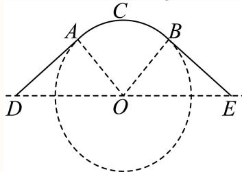
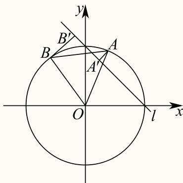
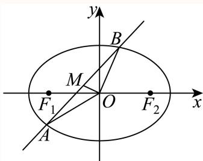

填空题 按本区原卷题号顺序排列。
嘉定 · 第1题 ★☆☆☆☆ · 教师预估 函数 y = log 2 ( x 2 − 1 ) y = \log _ { 2 } ( x ^ { 2 } - 1 ) y = log 2 ( x 2 − 1 )
考点： 对数真数限制与定义域；二次不等式求解。难度依据： 真数大于零后直接解二次不等式
核查说明： 题干与解析已用于人工归类，尚未完成整题公式校净与独立数学终审。
展开答案与解析 【答案】( − ∞ , − 1 ) ∪ ( 1 , + ∞ ) ( - \infty , - 1 ) \cup ( 1 , + \infty ) ( − ∞ , − 1 ) ∪ ( 1 , + ∞ )
【解析】
利用对数函数的定义，列出不等式求解即得.
函数 ⋅ y = log 2 ( x 2 − 1 ) \ { \cdot } y = \log _ { 2 } ( x ^ { 2 } - 1 ) ⋅ y = log 2 ( x 2 − 1 ) : x 2 − 1 > 0 : \ : x ^ { 2 } - 1 > 0 \ : : x 2 − 1 > 0 :
所以函数 : y = log 2 ( x 2 − 1 ) : y = \log _ { 2 } ( x ^ { 2 } - 1 ) : y = log 2 ( x 2 − 1 ) ( − ∞ , − 1 ) ∪ ( 1 , + ∞ ) ( - \infty , - 1 ) \cup ( 1 , + \infty ) ( − ∞ , − 1 ) ∪ ( 1 , + ∞ )
故答案为： ( − ∞ , − 1 ) ∪ ( 1 , + ∞ ) ( - \infty , - 1 ) \cup ( 1 , + \infty ) ( − ∞ , − 1 ) ∪ ( 1 , + ∞ )
嘉定 · 第2题 ★☆☆☆☆ · 教师预估 直线3x − y + 1 = 0的倾斜角为 .（用反三角函数表示）
考点： 一般式求斜率与倾斜角；反正切表示倾斜角。难度依据： 斜率为正时直接反正切求角
核查说明： 题干与解析已用于人工归类，尚未完成整题公式校净与独立数学终审。
展开答案与解析 【答案】arctan 3.
【解析】
由直线的一般式方程求得斜率，根据倾斜角与斜率的关系，建立方程，可得答案.
由直线 3 x − y + 1 = 0 3 x - y + 1 = 0 3 x − y + 1 = 0 tan θ = 3 \tan \theta = 3 tan θ = 3
解得 θ = arctan 3. \theta = \arctan 3 . θ = arctan 3.
故答案为：arctan 3.
嘉定 · 第3题 ★☆☆☆☆ · 教师预估 本题资料或解析有待核事项，预览不可作为已审定成品。
如果复数 z z z i z ‾ = 1 + 2 i \mathrm i\,\overline z=1+2\mathrm i i z = 1 + 2 i i \mathrm i i z = z= z =
考点： 共轭复数与复数除法。难度依据： 先除以虚数单位再取共轭
核查说明： 题干与解析已用于人工归类，尚未完成整题公式校净与独立数学终审。；题干共轭符号OCR写为上标短横，发布前须规范为共轭复数。
展开答案与解析 【答案】2 + i 2+\mathrm i 2 + i
【解析】
根据给定条件，利用复数除法求出 z ‾ \overline z z z z z
依题意，
z ‾ = 1 + 2 i i = ( 1 + 2 i ) ( − i ) i ( − i ) = 2 − i . \overline z=\frac{1+2\mathrm i}{\mathrm i}=\frac{(1+2\mathrm i)(-\mathrm i)}{\mathrm i(-\mathrm i)}=2-\mathrm i. z = i 1 + 2 i = i ( − i ) ( 1 + 2 i ) ( − i ) = 2 − i .
所以 z = 2 + i z=2+\mathrm i z = 2 + i
故答案为：2 + i 2+\mathrm i 2 + i
嘉定 · 第4题 ★☆☆☆☆ · 教师预估 本题资料或解析有待核事项，预览不可作为已审定成品。
在 △ A B C ′ \triangle A B C ^ { \prime } △ A B C ′ A B = 5 , B C = 21 , C A = 4 A B = 5 , B C = { \sqrt { 2 1 } } , C A = 4 A B = 5 , BC = 21 , C A = 4
考点： 三边已知用余弦定理求角。难度依据： 余弦定理直接代入
核查说明： 题干与解析已用于人工归类，尚未完成整题公式校净与独立数学终审。；题干三角形名称多出撇号，原解亦有残缺不等号，须校净。
展开答案与解析 【答案】π 3 \frac { \pi } { 3 } 3 π
【解析】
根据给定条件，利用余弦定理求解即得.
在 △ A B C ′ \triangle A B C ^ { \prime } △ A B C ′ cos A = A B 2 + C A 2 − B C 2 2 A B ⋅ C A = 25 + 16 − 21 2 × 5 × 4 = 1 2 \cos A = { \frac { A B ^ { 2 } + C A ^ { 2 } - B C ^ { 2 } } { 2 A B \cdot C A } } = { \frac { 2 5 + 1 6 - 2 1 } { 2 \times 5 \times 4 } } = { \frac { 1 } { 2 } } cos A = 2 A B ⋅ C A A B 2 + C A 2 − B C 2 = 2 × 5 × 4 25 + 16 − 21 = 2 1
< A < π ,
< A < \pi ,
< A < π ,
A = π 3
A = \frac {\pi}{3}
A = 3 π
故答案为： π 3 \frac { \pi } { 3 } 3 π
嘉定 · 第5题 ★☆☆☆☆ · 教师预估 已知双曲线C ： x 2 3 − y 2 2 = 1 { \frac { x ^ { 2 } } { 3 } } - { \frac { y ^ { 2 } } { 2 } } = 1 3 x 2 − 2 y 2 = 1 C 的离心率是
考点： 双曲线标准方程与离心率。难度依据： 识别实虚半轴后计算离心率
核查说明： 题干与解析已用于人工归类，尚未完成整题公式校净与独立数学终审。
展开答案与解析 【答案】15 3 \frac { \sqrt { 1 5 } } { 3 } 3 15
【解析】
利用双曲线方程求出实半轴长、半焦距，进而求出离心率.
双曲线C： x 2 3 − y 2 2 = 1 { \frac { x ^ { 2 } } { 3 } } - { \frac { y ^ { 2 } } { 2 } } = 1 3 x 2 − 2 y 2 = 1 a = 3 , a = { \sqrt { 3 } } , a = 3 , b = 2 b = { \sqrt { 2 } } b = 2
则半焦距 c = a 2 + b 2 = 5 c = { \sqrt { a ^ { 2 } + b ^ { 2 } } } = { \sqrt { 5 } } c = a 2 + b 2 = 5 e = c a = 15 3 e = { \frac { c } { a } } = { \frac { \sqrt { 1 5 } } { 3 } } e = a c = 3 15
故答案为： 15 3 \frac { \sqrt { 1 5 } } { 3 } 3 15
嘉定 · 第6题 ★☆☆☆☆ · 教师预估 已知圆锥的母线长为2，底面半径为1，则圆锥的侧面积为
考点： 圆锥侧面积公式。难度依据： 半径与母线直接代入
核查说明： 题干与解析已用于人工归类，尚未完成整题公式校净与独立数学终审。
展开答案与解析 【答案】2π.
【解析】
利用圆锥的侧面积公式即可得解.
因为圆锥的母线长为l = 2，底面半径为 ⌈ r = 1 \lceil r = 1 ⌈ r = 1
所以圆锥的侧面积为 π r l = 2 π \pi r l = 2 \pi π r l = 2 π
故答案为：2π.
嘉定 · 第7题 ★★☆☆☆ · 教师预估 本题资料或解析有待核事项，预览不可作为已审定成品。
在 ( x − 1 x ) \left( x - { \frac { 1 } { x } } \right) ( x − x 1 ) x 3 x ^ { 3 } x 3
考点： 二项式通项中的指数配对。难度依据： 通项指数含正负幂需解指数方程
核查说明： 仅修复所列OCR公式及其定界符错位；原解数学疑点和其他可渲染错识未因此消除。；题干与解析已用于人工归类，尚未完成整题公式校净与独立数学终审。；题干幂9游离于公式外，原解通项存在严重坏TeX，须回源排版。
展开答案与解析 【答案】-84
【解析】
先求出展开式的通项公式为 T r + 1 = ( − 1 ) r ⋅ C 9 r ⋅ x 9 − 2 r T _ { r + 1 } = ( - 1 ) ^ { r } \cdot C _ { 9 } ^ { r } \cdot x ^ { 9 - 2 r } T r + 1 = ( − 1 ) r ⋅ C 9 r ⋅ x 9 − 2 r x 3 x ^ { 3 } x 3 ( x − 1 x ) 9 \left(x-\frac1x\right)^9 ( x − x 1 ) 9
T r + 1 = C 9 r ⋅ x 9 − r ⋅ ( − 1 ) r ⋅ x − r = ( − 1 ) r ⋅ C 9 r ⋅ x 9 − 2 r
T _ {r + 1} = C _ {9} ^ {r} \cdot x ^ {9 - r} \cdot (- 1) ^ {r} \cdot x ^ {- r} = (- 1) ^ {r} \cdot C _ {9} ^ {r} \cdot x ^ {9 - 2 r}
T r + 1 = C 9 r ⋅ x 9 − r ⋅ ( − 1 ) r ⋅ x − r = ( − 1 ) r ⋅ C 9 r ⋅ x 9 − 2 r
H g − 2 r = 3 { \mathfrak { H } } { \mathfrak { g } } _ { - } { 2 r } = 3 H g − 2 r = 3 r = 3 r = 3 r = 3
∴展开式中 x 3 x ^ { 3 } x 3 − C 9 3 = − 84 - C _ { 9 } ^ { 3 } = - 8 4 − C 9 3 = − 84
故答案为-84
本题主要考查二项式定理的应用，二项式展开式的通项公式，求展开式中某项的系数，属于中档题
嘉定 · 第8题 ★★☆☆☆ · 教师预估 已知数列 { a n } \left\{ a _ { n } \right\} { a n } ∣ a n = − n + c , \begin{array} { r } { | a _ { n } = - n + c , } \end{array} ∣ a n = − n + c , { a n } \left\{ a _ { n } \right\} { a n } S n S _ { n } S n S 6 > S 5 S _ { 6 } > S _ { 5 } S 6 > S 5 S 6 > S 7 S _ { 6 } > S _ { 7 } S 6 > S 7
考点： 相邻前缀和比较转化为项的符号；线性不等式组确定参数。难度依据： 将两次和的比较还原为第六与第七项符号
核查说明： 题干与解析已用于人工归类，尚未完成整题公式校净与独立数学终审。
展开答案与解析 【答案】(6,7)
【解析】
根据给定条件，可得 ⋅ a 6 > 0 { \cdot } a _ { 6 } > 0 ⋅ a 6 > 0 a 7 < 0 a _ { 7 } < 0 a 7 < 0
数列 { a n } \{ a _ { n } \} { a n } S n S _ { n } S n S 6 > S 5 S _ { 6 } > S _ { 5 } S 6 > S 5 S 6 > S 7 S _ { 6 } > S _ { 7 } S 6 > S 7 a 6 = S 6 − S 5 > 0 E a 7 = S 7 − S 6 < 0 a _ { 6 } = S _ { 6 } - S _ { 5 } > 0 \mathrm { E } a _ { 7 } = S _ { 7 } - S _ { 6 } < 0 a 6 = S 6 − S 5 > 0 E a 7 = S 7 − S 6 < 0
而 a n = − n + c , a _ { n } = - n + c , a n = − n + c , c − 6 > 0 c − 7 < 0 \begin{array} { l } { c - 6 > 0 } \\ { c - 7 < 0 } \end{array} c − 6 > 0 c − 7 < 0 6 < c < 7 6 < c < 7 6 < c < 7
所以c的取值范围为(6,7).
故答案为：(6,7)
嘉定 · 第9题 ★★★☆☆ · 教师预估 已知 f ( x ) = ln ( x + 1 ) , g ( x ) = { f ( x ) , x ≥ 0 f ( − x ) , x < 0 , f \left( x \right) = \ln { \left( x + 1 \right) } , g \left( x \right) = \left\{ { f \left( x \right) } , x \geq 0 \atop f \left( - x \right) , x < 0 , \right. f ( x ) = ln ( x + 1 ) , g ( x ) = { f ( − x ) , x < 0 , f ( x ) , x ≥ 0 ∣ g ( x ) > x + 2 − \mid g ( x ) > x + 2 - ∣ g ( x ) > x + 2 −
考点： 分段对数函数比较与构造函数；按自变量符号分类解函数不等式。难度依据： 两段处理不同且正半轴需用导数判单调
核查说明： 题干与解析已用于人工归类，尚未完成整题公式校净与独立数学终审。
展开答案与解析 【答案】( − ∞ , e − 1 ) ( - \infty , \mathbf { e } - 1 ) ( − ∞ , e − 1 )
【解析】
根据分段函数的性质，分情况整理不等式，当x ≥ 0时，整理不等式，构造函数，利用导数研究新函数的单调性，当x < 0时，利用中间值法，可得答案.
当 x ≥ 0 H f x \geq 0 \mathbb { H } \mathbf { f } x ≥ 0 H f ( x + 1 ) > x + 2 − e ( x + 1 ) > x + 2 - \mathrm { e } ( x + 1 ) > x + 2 − e ln ( x + 1 ) − ( x + 1 ) > 1 − e \ln \left( x + 1 \right) - \left( x + 1 \right) > 1 - \mathrm { e } ln ( x + 1 ) − ( x + 1 ) > 1 − e
令 ⋅ t = 1 + x ≥ 1 \cdot t = 1 + x \geq 1 ⋅ t = 1 + x ≥ 1 h ( t ) = ln t − t , h \left( t \right) = \ln t - t , h ( t ) = ln t − t , h ′ ( t ) = 1 t − 1 = 1 − t t < 0 , h ^ { \prime } \left( t \right) = \frac { 1 } { t } - 1 = \frac { 1 - t } { t } < 0 , h ′ ( t ) = t 1 − 1 = t 1 − t < 0 ,
所以函数 h ( t ) [ 1 , + ∞ ) h \left( t \right) \mathcal { \left[ 1 , + \infty \right) } h ( t ) [ 1 , + ∞ ) ρ ~ h ( t ) = 1 − e \mathbf { \tilde { \rho } } _ { } h \left( t \right) = 1 - \mathbf { e } ρ ~ h ( t ) = 1 − e t = e . t = { \bf e } . t = e . x = e − 1 x = { \mathrm { e } } - 1 x = e − 1
此时不等 £ ρ ^ ( x ) > x + 2 − e \pounds \hat { \boldsymbol { \rho } } ( \boldsymbol { x } ) > \boldsymbol { x } + 2 - \mathrm { e } £ ρ ^ ( x ) > x + 2 − e [ 0 , e − 1 ) [ 0 , \mathrm { e } - 1 ) [ 0 , e − 1 )
当 x < x < x < ( 1 − x ) > x + 2 − e ( 1 - x ) > x + 2 - \mathrm { e } ( 1 − x ) > x + 2 − e Φ − − x > 1 \mathbf { \Phi } _ { - } - x > 1 Φ − − x > 1 n ( 1 − x ) > 0 \mathrm { n } \left( 1 - x \right) > 0 n ( 1 − x ) > 0
易知 ∣ x + 2 − e < 0 | x + 2 - \mathbf { e } < 0 ∣ x + 2 − e < 0 ‘ g ( x ) > x + 2 − ϵ \ ` g ( x ) > x + 2 - { \epsilon } ‘ g ( x ) > x + 2 − ϵ ( − ∞ , 0 ) ( - \infty , 0 ) ( − ∞ , 0 )
综上所述，不等式 ( g ( x ) ) > x + 2 − e \left( g \left( x \right) \right) > x + 2 - \mathrm { e } ( g ( x ) ) > x + 2 − e ( − ∞ , e − 1 ) ( - \infty , \mathbf { e } - 1 ) ( − ∞ , e − 1 )
故答案为： ( − ∞ , e − 1 ) ( - \infty , \mathbf { e } - 1 ) ( − ∞ , e − 1 )
嘉定 · 第10题 ★★★☆☆ · 教师预估 本题资料或解析有待核事项，预览不可作为已审定成品。
已知空间向量 O B 1 → , O B 2 → , O B 3 → \overrightarrow { O B _ { 1 } } , \overrightarrow { O B _ { 2 } } , \overrightarrow { O B _ { 3 } } O B 1 , O B 2 , O B 3 ∣ A B 1 → ∣ = ∣ A B 2 → ∣ = ∣ A B 3 → ∣ = 1 \left| \overrightarrow { A B _ { 1 } } \right| = \left| \overrightarrow { A B _ { 2 } } \right| = \left| \overrightarrow { A B _ { 3 } } \right| = 1 A B 1 = A B 2 = A B 3 = 1 O P → = O B 1 → + O B 2 → + O B 3 → \overrightarrow { O P } = \overrightarrow { O B _ { 1 } } + \overrightarrow { O B _ { 2 } } + \overrightarrow { O B _ { 3 } } OP = O B 1 + O B 2 + O B 3 ∣ ⟶ A P ⃗ ∣ ≤ 1 \left| \begin{array} { l } { \longrightarrow } \\ { \vec { A P } } \end{array} \right| \le 1 ⟶ A P ≤ 1 O A → \overrightarrow { O A } O A
考点： 空间正交向量数量积与模平方恒等式；等距点约束的空间度量。难度依据： 须将三组距离条件合并消去交叉项
核查说明： 题干与解析已用于人工归类，尚未完成整题公式校净与独立数学终审。；题干末尾将模长写成向量的取值范围；原PDF文字层及解析均有模长线，应回核后修复。
展开答案与解析 【答案】[ 1 , 6 2 ] \left[ 1 , { \frac { \sqrt { 6 } } { 2 } } \right] [ 1 , 2 6 ]
【解析】
根据给定条件，利用空间向量模的意义及数量积的运算律求得 ∣ O A → ∣ 2 = 3 − ∣ A P → ∣ 2 2 | \overrightarrow { O A } | ^ { 2 } = \frac { 3 - | \overrightarrow { A P } | ^ { 2 } } { 2 } ∣ O A ∣ 2 = 2 3 − ∣ A P ∣ 2
由空间向量 ⋅ O B 1 → , O B 2 → , O B 3 → \overrightarrow { { \cdot } O B _ { 1 } } , \overrightarrow { O B _ { 2 } } , \overrightarrow { O B _ { 3 } } ⋅ O B 1 , O B 2 , O B 3 O B 1 → ⋅ O B 2 → = O B 2 → ⋅ O B 3 → = O B 3 → ⋅ O B 1 → = 0 \overrightarrow { O B _ { 1 } } \cdot \overrightarrow { O B _ { 2 } } = \overrightarrow { O B _ { 2 } } \cdot \overrightarrow { O B _ { 3 } } = \overrightarrow { O B _ { 3 } } \cdot \overrightarrow { O B _ { 1 } } = 0 O B 1 ⋅ O B 2 = O B 2 ⋅ O B 3 = O B 3 ⋅ O B 1 = 0
又 AB1 = AB2 = AB3 = 1，OP = OB1 + OB2 + OB3 ，
则3 = |AB1|2 + |AB2|2 + |AB3|2 = (OB1 − OA)2 + (OB2 − OA)2 + (OB3 − OA)2−−→ → → → → → → → →
= 3 ∣ O A ∣ → 2 − 2 O A → ⋅ ( O B 1 → + O B 2 → + O B 3 → ) + ∣ O B 1 ∣ → 2 + ∣ O B 2 ∣ → 2 + ∣ O B 3 ∣ → 2
= 3 \overrightarrow {| O A |} ^ {2} - 2 \overrightarrow {O A} \cdot \left(\overrightarrow {O B _ {1}} + \overrightarrow {O B _ {2}} + \overrightarrow {O B _ {3}}\right) + \overrightarrow {| O B _ {1} |} ^ {2} + \overrightarrow {| O B _ {2} |} ^ {2} + \overrightarrow {| O B _ {3} |} ^ {2}
= 3 ∣ O A ∣ 2 − 2 O A ⋅ ( O B 1 + O B 2 + O B 3 ) + ∣ O B 1 ∣ 2 + ∣ O B 2 ∣ 2 + ∣ O B 3 ∣ 2
= 3 ∣ O A ∣ 2 → − 2 O A → ⋅ O P → + ( O B 1 → + O B 2 → + O B 3 → ) 2 − 2 ( O B 1 → ⋅ O B 2 → + O B 2 → ⋅ O B 3 → + O B 3 → ⋅ O B 1 → )
= 3 \overrightarrow {| O A | ^ {2}} - 2 \overrightarrow {O A} \cdot \overrightarrow {O P} + \left(\overrightarrow {O B _ {1}} + \overrightarrow {O B _ {2}} + \overrightarrow {O B _ {3}}\right) ^ {2} - 2 \left(\overrightarrow {O B _ {1}} \cdot \overrightarrow {O B _ {2}} + \overrightarrow {O B _ {2}} \cdot \overrightarrow {O B _ {3}} + \overrightarrow {O B _ {3}} \cdot \overrightarrow {O B _ {1}}\right)
= 3 ∣ O A ∣ 2 − 2 O A ⋅ OP + ( O B 1 + O B 2 + O B 3 ) 2 − 2 ( O B 1 ⋅ O B 2 + O B 2 ⋅ O B 3 + O B 3 ⋅ O B 1 )
= 3 ∣ O A → ∣ 2 − 2 O A → ⋅ O P → + ∣ O P → ∣ 2 = 2 ∣ O A → ∣ 2 + ∣ O A → ∣ 2 − 2 O A → ⋅ O P → + ∣ O P → ∣ 2
= 3 | \overrightarrow {O A} | ^ {2} - 2 \overrightarrow {O A} \cdot \overrightarrow {O P} + | \overrightarrow {O P} | ^ {2} = 2 | \overrightarrow {O A} | ^ {2} + | \overrightarrow {O A} | ^ {2} - 2 \overrightarrow {O A} \cdot \overrightarrow {O P} + | \overrightarrow {O P} | ^ {2}
= 3∣ O A ∣ 2 − 2 O A ⋅ OP + ∣ OP ∣ 2 = 2∣ O A ∣ 2 + ∣ O A ∣ 2 − 2 O A ⋅ OP + ∣ OP ∣ 2
= 2 ∣ O A → ∣ 2 + ( O A → − O P → ) 2 = 2 ∣ O A → ∣ 2 + ∣ A P → ∣ 2 = 2 | \overrightarrow { O A } | ^ { 2 } + \left( \overrightarrow { O A } - \overrightarrow { O P } \right) ^ { 2 } = 2 | \overrightarrow { O A } | ^ { 2 } + | \overrightarrow { A P } | ^ { 2 } = 2∣ O A ∣ 2 + ( O A − OP ) 2 = 2∣ O A ∣ 2 + ∣ A P ∣ 2 ≤ ∣ A P → ∣ ≤ 1 \leq | { \overrightarrow { A P } } | \leq 1 ≤ ∣ A P ∣ ≤ 1
因此 ∣ O A → ∣ 2 = 3 − ∣ A P → ∣ 2 2 ∈ [ 1 , 3 2 ] , ∣ O A → ∣ ∈ [ 1 , 6 2 ] | \overrightarrow { O A } | ^ { 2 } = \frac { 3 - | \overrightarrow { A P } | ^ { 2 } } { 2 } \in \left[ 1 , \frac { 3 } { 2 } \right] , \overrightarrow { | O A } | \in \left[ 1 , \frac { \sqrt { 6 } } { 2 } \right] ∣ O A ∣ 2 = 2 3 − ∣ A P ∣ 2 ∈ [ 1 , 2 3 ] , ∣ O A ∣ ∈ [ 1 , 2 6 ]
所以 O A → \overrightarrow { \ O A } O A [ 1 , 6 2 ] \left[ 1 , { \frac { \sqrt { 6 } } { 2 } } \right] [ 1 , 2 6 ]
故答案为： [ 1 , 6 2 ] \left[ 1 , { \frac { \sqrt { 6 } } { 2 } } \right] [ 1 , 2 6 ]
嘉定 · 第11题 ★★★★☆ · 教师预估 本题资料或解析有待核事项，预览不可作为已审定成品。
某公园为了美化环境，计划建造一座拱桥 D A C B E DACBE D A CBE A C B ^ \widehat{ACB} A CB A D , B E AD,BE A D , BE A C B ^ \widehat{ACB} A CB O O O D E DE D E A D AD A D B E BE BE O O O A A A B B B A C B ^ \widehat{ACB} A CB ∠ A D O = θ \angle ADO=\theta ∠ A D O = θ θ \theta θ arcsin 1 3 ≤ θ ≤ π 6 \arcsin\frac13\le\theta\le\frac\pi6 arcsin 3 1 ≤ θ ≤ 6 π θ \theta θ
考点： 实际费用函数建模与导数最值；切线长度和圆弧长度的三角表示。难度依据： 几何建模后在受限角区间内求最小费用
核查说明： 题干与解析已用于人工归类，尚未完成整题公式校净与独立数学终审。；桥面线段和圆弧名称存在错识，不能直接按当前题干发布。
展开答案与解析 【答案】arcsin 2 5 \arcsin { \frac { 2 } { 5 } } arcsin 5 2
【解析】
根据给定条件，结合弧长公式求出桥面修建总费用的函数关系f(θ)，再利用导数探讨函数最小值问题.
连接 O A , O B O A , O B O A , OB O A ⊥ A D , O B ⊥ B E O A \bot A D , O B \bot B E O A ⊥ A D , OB ⊥ BE B E = A D = O A tan θ = 4 tan θ B E = A D = { \frac { O A } { \tan \theta } } = { \frac { 4 } { \tan \theta } } BE = A D = t a n θ O A = t a n θ 4
∠ A O B = π − ( ∠ A O D + ∠ B O E ) = π − 2 ( π 2 − θ ) = 2 θ \angle A O B = \pi - \left( \angle A O D + \angle B O E \right) = \pi - 2 \left( { \frac { \pi } { 2 } } - \theta \right) = 2 \theta ∠ A OB = π − ( ∠ A O D + ∠ BOE ) = π − 2 ( 2 π − θ ) = 2 θ
则桥面修建总费用 f ( θ ) = 0.4 × 8 tan θ + 2.5 × 8 θ = 3.2 tan θ + 20 θ , arcsin 1 3 ≤ θ ≤ π 6 f \left( \theta \right) = 0 . 4 \times \frac { 8 } { \tan \theta } + 2 . 5 \times 8 \theta = \frac { 3 . 2 } { \tan \theta } + 2 0 \theta , \arcsin \frac { 1 } { 3 } \leq \theta \leq \frac { \pi } { 6 } f ( θ ) = 0.4 × t a n θ 8 + 2.5 × 8 θ = t a n θ 3.2 + 20 θ , arcsin 3 1 ≤ θ ≤ 6 π
而 f ( θ ) = 3.2 cos θ sin θ + 20 θ f \left( \theta \right) = \frac { 3 . 2 \cos \theta } { \sin \theta } + 2 0 \theta f ( θ ) = s i n θ 3.2 c o s θ + 20 θ f ′ ( θ ) = 3.2 ( − sin 2 θ − cos 2 θ ) sin 2 θ + 20 = 20 − 3.2 sin 2 θ , f ^ { \prime } \left( \theta \right) = \frac { 3 . 2 ( - \sin ^ { 2 } \theta - \cos ^ { 2 } \theta ) } { \sin ^ { 2 } \theta } + 2 0 = 2 0 - \frac { 3 . 2 } { \sin ^ { 2 } \theta } , f ′ ( θ ) = s i n 2 θ 3.2 ( − s i n 2 θ − c o s 2 θ ) + 20 = 20 − s i n 2 θ 3.2 ,
由 arcsin 1 3 ≤ θ ≤ π 6 \arcsin { \frac { 1 } { 3 } } \leq \theta \leq { \frac { \pi } { 6 } } arcsin 3 1 ≤ θ ≤ 6 π 1 3 ≤ sin θ ≤ 1 2 \frac { 1 } { 3 } \leq \sin \theta \leq \frac { 1 } { 2 } 3 1 ≤ sin θ ≤ 2 1 1 9 ≤ sin 2 θ ≤ 1 4 { \frac { 1 } { 9 } } \leq \sin ^ { 2 } \theta \leq { \frac { 1 } { 4 } } 9 1 ≤ sin 2 θ ≤ 4 1 f ′ ( θ ) = 0 f ^ { \prime } ( \theta ) = 0 f ′ ( θ ) = 0 sin θ = 2 5 \sin \theta = \frac { 2 } { 5 } sin θ = 5 2
当 1 3 ≤ sin θ < 2 5 \frac { 1 } { 3 } \leq \sin \theta < \frac { 2 } { 5 } 3 1 ≤ sin θ < 5 2 arcsin 1 3 ≤ θ < arcsin 2 5 \arcsin { \frac { 1 } { 3 } } \leq \theta < \arcsin { \frac { 2 } { 5 } } arcsin 3 1 ≤ θ < arcsin 5 2 f ′ ( θ ) < 0 f ^ { \prime } ( \theta ) < 0 f ′ ( θ ) < 0
当 2 5 < sin θ ≤ 1 2 \frac { 2 } { 5 } < \sin \theta \leq \frac { 1 } { 2 } 5 2 < sin θ ≤ 2 1 arcsin 2 5 < θ ≤ π 6 \arcsin { \frac { 2 } { 5 } } < \theta \leq { \frac { \pi } { 6 } } arcsin 5 2 < θ ≤ 6 π f ′ ( θ ) > 0. f ^ { \prime } ( \theta ) > 0 . f ′ ( θ ) > 0.
因此函数f(θ)在 ⌈ arcsin 1 3 , arcsin 2 5 ) \left\lceil \arcsin { \frac { 1 } { 3 } } , \arcsin { \frac { 2 } { 5 } } \right) ⌈ arcsin 3 1 , arcsin 5 2 ) ( arcsin 2 5 , π 6 ) \left( \arcsin { \frac { 2 } { 5 } } , { \frac { \pi } { 6 } } \right) ( arcsin 5 2 , 6 π )
所以当且仅当 θ = arcsin 2 5 \theta = \arcsin { \frac { 2 } { 5 } } θ = arcsin 5 2
故答案为： arcsin 2 5 \arcsin { \frac { 2 } { 5 } } arcsin 5 2

嘉定 · 第12题 ★★★★☆ · 教师预估 本题资料或解析有待核事项，预览不可作为已审定成品。
已知实数 [ x 1 , x 2 , y 1 , y 2 \left[ x _ { 1 } , x _ { 2 } , y _ { 1 } , y _ { 2 } \right. [ x 1 , x 2 , y 1 , y 2 x 1 2 + y 1 2 = 1 , x 2 2 + y 2 2 = 1 , x 1 x 2 + y 1 y 2 = 1 2 x _ { 1 } ^ { 2 } + y _ { 1 } ^ { 2 } = 1 , x _ { 2 } ^ { 2 } + y _ { 2 } ^ { 2 } = 1 , x _ { 1 } x _ { 2 } + y _ { 1 } y _ { 2 } = { \frac { 1 } { 2 } } x 1 2 + y 1 2 = 1 , x 2 2 + y 2 2 = 1 , x 1 x 2 + y 1 y 2 = 2 1 ∣ x 1 + y 1 − 1 ∣ 2 + ∣ x 2 + y 2 − 1 ∣ 2 { \frac { | x _ { 1 } + y _ { 1 } - 1 | } { \sqrt { 2 } } } + { \frac { | x _ { 2 } + y _ { 2 } - 1 | } { \sqrt { 2 } } } 2 ∣ x 1 + y 1 − 1∣ + 2 ∣ x 2 + y 2 − 1∣
考点： 点线距离和与单位圆弦的几何转化；数量积确定圆心角；定角弦及投影的距离最值。难度依据： 绝对值转点线距离并区分两点位于直线同异侧
核查说明： 题干与解析已用于人工归类，尚未完成整题公式校净与独立数学终审。；原解几处角区间及同侧讨论有乱码，完整分类不等于已核证明。
展开答案与解析 【答案】6 − 2 4 \frac { { \sqrt { 6 } } - { \sqrt { 2 } } } { 4 } 4 6 − 2
【解析】
设 A ( x 1 , y 1 ) , B ( x 2 , y 2 ) A ( x _ { 1 } , y _ { 1 } ) , B ( x _ { 2 } , y _ { 2 } ) A ( x 1 , y 1 ) , B ( x 2 , y 2 ) ∠ A O B = 6 0 ∘ \angle A O B = 6 0 ^ { \circ } ∠ A OB = 6 0 ∘ ∣ x 1 + y 1 − 1 ∣ 2 + ∣ x 2 + y 2 − 1 ∣ 2 { \frac { | x _ { 1 } + y _ { 1 } - 1 | } { \sqrt { 2 } } } + { \frac { | x _ { 2 } + y _ { 2 } - 1 | } { \sqrt { 2 } } } 2 ∣ x 1 + y 1 − 1∣ + 2 ∣ x 2 + y 2 − 1∣ : + y − 1 = 0 : + y - 1 = 0 : + y − 1 = 0 x 2 + y 2 = 3 4 x ^ { 2 } + y ^ { 2 } = { \frac { 3 } { 4 } } x 2 + y 2 = 4 3
设 A ( x 1 , y 1 ) , B ( x 2 , y 2 ) A ( x _ { 1 } , y _ { 1 } ) , B ( x _ { 2 } , y _ { 2 } ) A ( x 1 , y 1 ) , B ( x 2 , y 2 ) O A → = ( x 1 , y 1 ) , O B → = ( x 2 , y 2 ) \overrightarrow { { O A } } = ( x _ { 1 } , y _ { 1 } ) , \overrightarrow { { O B } } = ( x _ { 2 } , y _ { 2 } ) O A = ( x 1 , y 1 ) , OB = ( x 2 , y 2 ) x 1 2 + y 1 2 = 1 , x 2 2 + y 2 2 = 1 x _ { 1 } ^ { 2 } + y _ { 1 } ^ { 2 } = 1 , x _ { 2 } ^ { 2 } + y _ { 2 } ^ { 2 } = 1 x 1 2 + y 1 2 = 1 , x 2 2 + y 2 2 = 1 x 1 x 2 + y 1 y 2 = 1 2 x _ { 1 } x _ { 2 } + y _ { 1 } y _ { 2 } = { \frac { 1 } { 2 } } x 1 x 2 + y 1 y 2 = 2 1
得点A,B在单位圆 x 2 + y 2 = 1 − x ^ { 2 } + y ^ { 2 } = 1 _ { - } x 2 + y 2 = 1 − O A → ⋅ O B → = x 1 x 2 + y 1 y 2 = 1 × 1 × cos ∠ A O B = 1 2 \overrightarrow { O A } \cdot \overrightarrow { O B } = x _ { 1 } x _ { 2 } + y _ { 1 } y _ { 2 } = 1 \times 1 \times \cos \angle A O B = \frac { 1 } { 2 } O A ⋅ OB = x 1 x 2 + y 1 y 2 = 1 × 1 × cos ∠ A OB = 2 1
即 ∠ A O B = 6 0 ∘ \angle A O B = 6 0 ^ { \circ } ∠ A OB = 6 0 ∘ △ A O B \triangle A O B △ A OB ∣ A B ∣ = 1 | A B | = 1 ∣ A B ∣ = 1
∣ x 1 + y 1 − 1 ∣ 2 + ∣ x 2 + y 2 − 1 ∣ 2 { \frac { | x _ { 1 } + y _ { 1 } - 1 | } { \sqrt { 2 } } } + { \frac { | x _ { 2 } + y _ { 2 } - 1 | } { \sqrt { 2 } } } 2 ∣ x 1 + y 1 − 1∣ + 2 ∣ x 2 + y 2 − 1∣ x + y − 1 = 0 x + y - 1 = 0 x + y − 1 = 0 d 1 d _ { 1 } d 1 d 2 d _ { 2 } d 2
( cos α , sin α ) , B ( cos ( α + π 3 ) , sin ( α + π 3 ) ) , 0 < α < π 6 或 π 2 < α < 5 π 3 .
(\cos \alpha , \sin \alpha), B \left(\cos \left(\alpha + \frac {\pi}{3}\right), \sin \left(\alpha + \frac {\pi}{3}\right)\right), 0 < \alpha < \frac {\pi}{6} \text {或} \frac {\pi}{2} < \alpha < \frac {5 \pi}{3}.
( cos α , sin α ) , B ( cos ( α + 3 π ) , sin ( α + 3 π ) ) , 0 < α < 6 π 或 2 π < α < 3 5 π .
当0 < α < π 6 < \alpha < \frac { \pi } { 6 } < α < 6 π π 4 < α + π 4 < 5 π 12 \frac { \pi } { 4 } < \alpha + \frac { \pi } { 4 } < \frac { 5 \pi } { 1 2 } 4 π < α + 4 π < 12 5 π sin α + cos α = 2 sin ( α + π 4 ) > 1 \sin \alpha + \cos \alpha = { \sqrt { 2 } } \sin \left( \alpha + { \frac { \pi } { 4 } } \right) > 1 sin α + cos α = 2 sin ( α + 4 π ) > 1
7 π 12 < α + π 3 + π 4 < 3 π 4 , sin ( α + π 3 ) + cos ( α + π 3 ) = 2 sin ( α + π 3 + π 4 ) > 1 ,
\frac {7 \pi}{1 2} < \alpha + \frac {\pi}{3} + \frac {\pi}{4} < \frac {3 \pi}{4}, \sin \left(\alpha + \frac {\pi}{3}\right) + \cos \left(\alpha + \frac {\pi}{3}\right) = \sqrt {2} \sin \left(\alpha + \frac {\pi}{3} + \frac {\pi}{4}\right) > 1,
12 7 π < α + 3 π + 4 π < 4 3 π , sin ( α + 3 π ) + cos ( α + 3 π ) = 2 sin ( α + 3 π + 4 π ) > 1 ,
cos 5 π 12 = sin π 12 = sin ( π 3 − π 4 ) = sin π 3 cos π 4 − cos π 3 sin π 4 = 6 4 − 2 4 = 6 − 2 4 ,
\cos {\frac {5 \pi}{1 2}} = \sin {\frac {\pi}{1 2}} = \sin \left(\frac {\pi}{3} - \frac {\pi}{4}\right) = \sin {\frac {\pi}{3}} \cos {\frac {\pi}{4}} - \cos {\frac {\pi}{3}} \sin {\frac {\pi}{4}} = \frac {\sqrt {6}}{4} - \frac {\sqrt {2}}{4} = \frac {\sqrt {6} - \sqrt {2}}{4},
cos 12 5 π = sin 12 π = sin ( 3 π − 4 π ) = sin 3 π cos 4 π − cos 3 π sin 4 π = 4 6 − 4 2 = 4 6 − 2 ,
sin 5 π 12 = cos π 12 = cos ( π 3 − π 4 ) = cos π 3 cos π 4 + sin π 3 sin π 4 = 2 4 + 6 4 = 6 + 2 4 ,
\sin {\frac {5 \pi}{1 2}} = \cos {\frac {\pi}{1 2}} = \cos \left(\frac {\pi}{3} - \frac {\pi}{4}\right) = \cos {\frac {\pi}{3}} \cos {\frac {\pi}{4}} + \sin {\frac {\pi}{3}} \sin {\frac {\pi}{4}} = \frac {\sqrt {2}}{4} + \frac {\sqrt {6}}{4} = \frac {\sqrt {6} + \sqrt {2}}{4},
sin 12 5 π = cos 12 π = cos ( 3 π − 4 π ) = cos 3 π cos 4 π + sin 3 π sin 4 π = 4 2 + 4 6 = 4 6 + 2 ,
是 d 1 + d 2 = ∣ sin α + cos α − 1 ∣ 2 + ∣ sin ( α + π 3 ) + cos ( α + π 3 ) − 1 ∣ 2
\text {是} d _ {1} + d _ {2} = \frac {\left| \sin \alpha + \cos \alpha - 1 \right|}{\sqrt {2}} + \frac {\left| \sin \left(\alpha + \frac {\pi}{3}\right) + \cos \left(\alpha + \frac {\pi}{3}\right) - 1 \right|}{\sqrt {2}}
是 d 1 + d 2 = 2 ∣ sin α + cos α − 1 ∣ + 2 sin ( α + 3 π ) + cos ( α + 3 π ) − 1
= 1 2 [ sin α + cos α + sin ( α + π 3 ) + cos ( α + π 3 ) − 2 ] = 1 2
= \frac {1}{\sqrt {2}} \left[ \sin \alpha + \cos \alpha + \sin \left(\alpha + \frac {\pi}{3}\right) + \cos \left(\alpha + \frac {\pi}{3}\right) - 2 \right] = \frac {1}{\sqrt {2}}
= 2 1 [ sin α + cos α + sin ( α + 3 π ) + cos ( α + 3 π ) − 2 ] = 2 1
( 3 − 3 2 sin α + 3 + 3 2 cos α ) − 2
\left(\frac {3 - \sqrt {3}}{2} \sin \alpha + \frac {3 + \sqrt {3}}{2} \cos \alpha\right) - \sqrt {2}
( 2 3 − 3 sin α + 2 3 + 3 cos α ) − 2
= 6 2 ( 6 − 2 4 sin α + 6 + 2 4 cos α ) − 2 = 3 sin ( α + 5 π 12 ) − 2 ,
= \frac {\sqrt {6}}{\sqrt {2}} \left(\frac {\sqrt {6} - \sqrt {2}}{4} \sin \alpha + \frac {\sqrt {6} + \sqrt {2}}{4} \cos \alpha\right) - \sqrt {2} = \sqrt {3} \sin \left(\alpha + \frac {5 \pi}{1 2}\right) - \sqrt {2},
= 2 6 ( 4 6 − 2 sin α + 4 6 + 2 cos α ) − 2 = 3 sin ( α + 12 5 π ) − 2 ,
由0 1 < α < π 6 1 < \alpha < \frac { \pi } { 6 } 1 < α < 6 π 5 π 12 < α + 5 π 12 < 7 π 12 , 6 + 2 4 < sin ( α + 5 π 12 ) ≤ 1 , \frac { 5 \pi } { 1 2 } < \alpha + \frac { 5 \pi } { 1 2 } < \frac { 7 \pi } { 1 2 } , \frac { \sqrt { 6 } + \sqrt { 2 } } { 4 } < \sin \left( \alpha + \frac { 5 \pi } { 1 2 } \right) \le 1 , 12 5 π < α + 12 5 π < 12 7 π , 4 6 + 2 < sin ( α + 12 5 π ) ≤ 1 ,
d 1 + d 2 > 6 − 2 4 ;
d _ {1} + d _ {2} > \frac {\sqrt {6} - \sqrt {2}}{4};
d 1 + d 2 > 4 6 − 2 ;
当 π 2 < α < 5π 时， 3 π 4 < α + π 4 < 23 π 12 \frac { 3 \pi } { 4 } < \alpha + \frac { \pi } { 4 } < \frac { 2 3 \pi } { 1 2 } 4 3 π < α + 4 π < 12 23 π sin α + cos α = 2 sin ( α + π 4 ) < 1 \sin \alpha + \cos \alpha = { \sqrt { 2 } } \sin \left( \alpha + { \frac { \pi } { 4 } } \right) < 1 sin α + cos α = 2 sin ( α + 4 π ) < 1
13 π 12 < α + π 3 + π 4 < 9 π 4 , sin ( α + π 3 ) + cos ( α + π 3 ) = 2 sin ( α + π 3 + π 4 ) < 1 ,
\frac {1 3 \pi}{1 2} < \alpha + \frac {\pi}{3} + \frac {\pi}{4} < \frac {9 \pi}{4}, \sin \left(\alpha + \frac {\pi}{3}\right) + \cos \left(\alpha + \frac {\pi}{3}\right) = \sqrt {2} \sin \left(\alpha + \frac {\pi}{3} + \frac {\pi}{4}\right) < 1,
12 13 π < α + 3 π + 4 π < 4 9 π , sin ( α + 3 π ) + cos ( α + 3 π ) = 2 sin ( α + 3 π + 4 π ) < 1 ,
d 1 + d 2 = 1 2 [ 2 − sin α − cos α − sin ( α + π 3 ) − cos ( α + π 3 ) ]
d _ {1} + d _ {2} = \frac {1}{\sqrt {2}} \Big [ 2 - \sin \alpha - \cos \alpha - \sin \left(\alpha + \frac {\pi}{3}\right) - \cos \left(\alpha + \frac {\pi}{3}\right) \Big ]
d 1 + d 2 = 2 1 [ 2 − sin α − cos α − sin ( α + 3 π ) − cos ( α + 3 π ) ]
= 2 − 1 2 ( 3 − 3 2 sin α + 3 + 3 2 cos α ) = 2 − 3 sin ( α + 5 π 12 ) ,
= \sqrt {2} - \frac {1}{\sqrt {2}} \left(\frac {3 - \sqrt {3}}{2} \sin \alpha + \frac {3 + \sqrt {3}}{2} \cos \alpha\right) = \sqrt {2} - \sqrt {3} \sin \left(\alpha + \frac {5 \pi}{1 2}\right),
= 2 − 2 1 ( 2 3 − 3 sin α + 2 3 + 3 cos α ) = 2 − 3 sin ( α + 12 5 π ) ,
11 π 12 < α + 5 π 12 < 25 π 12 , − 1 ≤ sin ( α + 5 π 12 ) < 6 − 2 4 , d 1 + d 2 > 6 + 2 4 ;
\frac {1 1 \pi}{1 2} < \alpha + \frac {5 \pi}{1 2} < \frac {2 5 \pi}{1 2}, - 1 \leq \sin \left(\alpha + \frac {5 \pi}{1 2}\right) < \frac {\sqrt {6} - \sqrt {2}}{4}, d _ {1} + d _ {2} > \frac {\sqrt {6} + \sqrt {2}}{4};
12 11 π < α + 12 5 π < 12 25 π , − 1 ≤ sin ( α + 12 5 π ) < 4 6 − 2 , d 1 + d 2 > 4 6 + 2 ;
当点A,B在直线l异侧时（包括点A,B之一在直线l上），
过A ,B 分别作 A A ′ ⊥ l , B B ′ ⊥ l , A A ^ { \prime } \bot l , B B ^ { \prime } \bot l , A A ′ ⊥ l , B B ′ ⊥ l , A ′,B ′，令直线AB 与直线l 的夹角为θ ( π 12 ≤ θ ≤ 5 π 12 ) \left( { \frac { \pi } { 1 2 } } \leq \theta \leq { \frac { 5 \pi } { 1 2 } } \right) ( 12 π ≤ θ ≤ 12 5 π ) d 1 + d 2 = ∣ A B ∣ sin θ = sin θ ≥ sin π 12 = 6 − 2 4 , d _ { 1 } + d _ { 2 } = | A B | \sin \theta = \sin \theta \geq \sin { \frac { \pi } { 1 2 } } = { \frac { { \sqrt { 6 } } - { \sqrt { 2 } } } { 4 } } , d 1 + d 2 = ∣ A B ∣ sin θ = sin θ ≥ sin 12 π = 4 6 − 2 ,

所以 ∣ x 1 + y 1 − 1 ∣ 2 + ∣ x 2 + y 2 − 1 ∣ 2 { \frac { | x _ { 1 } + y _ { 1 } - 1 | } { \sqrt { 2 } } } + { \frac { | x _ { 2 } + y _ { 2 } - 1 | } { \sqrt { 2 } } } 2 ∣ x 1 + y 1 − 1∣ + 2 ∣ x 2 + y 2 − 1∣ 6 − 2 4 \frac { { \sqrt { 6 } } - { \sqrt { 2 } } } { 4 } 4 6 − 2
故答案为： 6 − 2 4 \frac { { \sqrt { 6 } } - { \sqrt { 2 } } } { 4 } 4 6 − 2
关键点点睛：本题解题的关键是将 ∣ x 1 + y 1 − 1 ∣ 2 + ∣ x 2 + y 2 − 1 ∣ 2 \frac { | x _ { 1 } + y _ { 1 } - 1 | } { \sqrt { 2 } } + \frac { | x _ { 2 } + y _ { 2 } - 1 | } { \sqrt { 2 } } 2 ∣ x 1 + y 1 − 1∣ + 2 ∣ x 2 + y 2 − 1∣ A ( x 1 , y 1 ) , B ( x 2 , y 2 ) A ( x _ { 1 } , y _ { 1 } ) , B ( x _ { 2 } , y _ { 2 } ) A ( x 1 , y 1 ) , B ( x 2 , y 2 ) x + y − 1 = 0 x + y - 1 = 0 x + y − 1 = 0 d 1 Θ d 2 d _ { 1 } \mathscr { \varTheta } d _ { 2 } d 1 Θ d 2
二、选择题
选择题 按本区原卷题号顺序排列。
嘉定 · 第13题 ★★☆☆☆ · 教师预估 已知a为正数，则 ∗ a > 3 ∗ ^ { * } a > 3 ^ { * } ∗ a > 3 ∗ a a > a 3 , { } ^ { } a ^ { a } > a ^ { 3 } { } ^ { , } a a > a 3 ,
A. 充分非必要条件
B. 必要非充分条件
C. 充要条件
D. 既非充分也非必要条件
考点： 指数不等式的充分必要条件；按指数函数底数分类讨论；变底数指数大小比较。难度依据： 底数在零一之间时不等方向变化
核查说明： 题干与解析已用于人工归类，尚未完成整题公式校净与独立数学终审。
展开答案与解析 【答案】A
【解析】
根据给定条件，当 a > 3 a > 3 a > 3 a a > a 3 a ^ { a } > a ^ { 3 } a a > a 3
当 a > a > a > ⟨ y = a x \langle y = a ^ { x } ⟨ y = a x a a > a 3 a ^ { a } > a ^ { 3 } a a > a 3
当 a a > a 3 a ^ { a } > a ^ { 3 } a a > a 3 a > 3 , a > 3 , a > 3 , < a < < a < < a < a < 3 a < 3 a < 3 < a < 1 < a < 1 < a < 1
所以 ∗ a > 3 ∗ ^ { * } a > 3 ^ { * } ∗ a > 3 ∗ ⋅ a a > a 3 , { } ^ { \cdot } a ^ { a } > a ^ { 3 } { } ^ { , } ⋅ a a > a 3 ,
故选：A.
嘉定 · 第14题 ★★☆☆☆ · 教师预估 已知α,β是两个不同的平面，a，b是两条不同的直线，下列条件中，一定得到直线l⊥α的是（ ）
A. α ⊥ β , l / / β \alpha \perp \beta , l / / \beta α ⊥ β , l // β
B. l ⊥ a , a / / α l \perp a , a / / \alpha l ⊥ a , a // α
C. l / / a , a ⊥ α l / / a , a \bot \alpha l // a , a ⊥ α
D. l ⊥ a , l ⊥ b , a ⊂ α , b ⊂ α l \bot a , l \bot b , a \subset \alpha , b \subset \alpha l ⊥ a , l ⊥ b , a ⊂ α , b ⊂ α
考点： 线面垂直判定及反例辨析。难度依据： 区分平行传递与遗漏相交条件的伪判定
核查说明： 题干与解析已用于人工归类，尚未完成整题公式校净与独立数学终审。
展开答案与解析 【答案】C
【解析】
根据直线、平面的位置关系的判断可得结果.
对于A， α ⊥ β , l / / β , \alpha \perp \beta , l / / \beta , α ⊥ β , l // β , ⊂ α , \subset \alpha , ⊂ α ,
对于B， l ⊥ a , a / / α l \perp a , a / / \alpha l ⊥ a , a // α ⊂ α , \subset \alpha , ⊂ α ,
对于C， l / / a , a ⊥ α l / / a , a \bot \alpha l // a , a ⊥ α
对于D， l ⊥ a , l ⊥ b , a ⊂ α , b ⊂ α l \bot a , l \bot b , a \subset \alpha , b \subset \alpha l ⊥ a , l ⊥ b , a ⊂ α , b ⊂ α Ξ α \varXi \alpha Ξ α ⊂ α \subset \alpha ⊂ α
故选：C.
嘉定 · 第15题 ★★★☆☆ · 教师预估 假定生男生女是等可能的，设事件A：一个家庭中既有男孩又有女孩；事件B:一个家庭中最多有一个女孩.针对下列两种情形：①家庭中有2个小孩；②家庭中有3个小孩，下面说法正确是（ ）.
A. ①中事件A与事件B相互独立､②中的事件A与事件B相互独立
B. ①中事件A与事件B不相互独立､②中的事件A与事件B相互独立
C. ①中事件A与事件B相互独立､②中的事件A与事件B不相互独立
D. ①中事件A与事件B不相互独立､②中的事件A与事件B不相互独立
考点： 枚举样本空间与事件独立性判定。难度依据： 儿童数改变需分别计算交事件概率
核查说明： 题干与解析已用于人工归类，尚未完成整题公式校净与独立数学终审。
展开答案与解析 【答案】B
【解析】
分别写出①②对应的样本空间，再利用相互独立事件计算判断.
若家庭中有两个小孩，样本空间为Ω = {(男,男)，(男,女)，(女,男)，(女,女)}，共4种情况，
A = {(男,女)，(女,男)}，B = {(男,男)，(男,女)，(女,男)}，AB = {(男,女)，(女,男)}，
则 P ( A ) = 2 4 = 1 2 , P ( B ) = 3 4 , P ( A B ) = 2 4 = 1 2 ≠ P ( A ) P ( B ) P \left( A \right) = \frac { 2 } { 4 } = \frac { 1 } { 2 } , P \left( B \right) = \frac { 3 } { 4 } , P \left( A B \right) = \frac { 2 } { 4 } = \frac { 1 } { 2 } \neq P \left( A \right) P \left( B \right) P ( A ) = 4 2 = 2 1 , P ( B ) = 4 3 , P ( A B ) = 4 2 = 2 1 = P ( A ) P ( B )
若家庭中有三个小孩，样本空间为Ω = {(男,男,男)，(男,男,女)，(男,女,男)，(女,男,男)，
(男,女,女)，(女,男,女)，(女,女,男)，(女,女,女)}，共8种情况，
A = {(男,男,女)，(男,女,男)，(女,男,男)，(男,女,女)，(女,男,女)，(女,女,男)}，
B = {(男,男,男)，(男,男,女)，(男,女,男)，(女,男,男)}，AB = {(男,男,女)，(男,女,男)，(女,男,男)}，
P ( A ) = 6 8 = 3 4 , P ( B ) = 4 8 = 1 2 , P ( A B ) = 3 8 = P ( A ) P ( B ) P \left( A \right) = \frac { 6 } { 8 } = \frac { 3 } { 4 } , P \left( B \right) = \frac { 4 } { 8 } = \frac { 1 } { 2 } , P \left( A B \right) = \frac { 3 } { 8 } = P \left( A \right) P \left( B \right) P ( A ) = 8 6 = 4 3 , P ( B ) = 8 4 = 2 1 , P ( A B ) = 8 3 = P ( A ) P ( B )
故选：B
嘉定 · 第16题 ★★★★☆ · 教师预估 本题资料或解析有待核事项，预览不可作为已审定成品。
已知数列 { a n } \left\{ a _ { n } \right\} { a n } a n + 1 = r a n ( 1 − a n ) ( n = 1 , 2 , 3 , ⋅ ⋅ ⋅ ) , a 1 ∈ ( 0 , 1 ) a _ { n + 1 } = r a _ { n } \left( 1 - a _ { n } \right) ( n = 1 , 2 , 3 , \cdot \cdot \cdot ) , a _ { 1 } \in ( 0 , 1 ) a n + 1 = r a n ( 1 − a n ) ( n = 1 , 2 , 3 , ⋅ ⋅ ⋅ ) , a 1 ∈ ( 0 , 1 ) a ˙ 1 \mathbf { \dot { a } } _ { 1 } a ˙ 1 ⋅ n , ⋅ ^ { \cdot _ { n , \cdot } } ⋅ n , ⋅ a n + 1 > a n a _ { n + 1 } > a _ { n } a n + 1 > a n ( a 1 \scriptstyle ( a _ { 1 } ( a 1 n > P H ] n > P \mathbb { H } ] n > P H ] a n + 1 − a n < 1 2025 a _ { n + 1 } - a _ { n } < { \frac { 1 } { 2 0 2 5 } } a n + 1 − a n < 2025 1 P , P , P , n > P k n > P \mathbb { k } n > P k a n + 1 = a n a _ { n + 1 } = a _ { n } a n + 1 = a n . n ≥ 3 . n \geq 3 . n ≥ 3 a ˙ n > 0 \dot { a } _ { n } > 0 a ˙ n > 0
A. ①②
B. ②③
C. ③④
D. ②④
考点： 二次迭代数列的不动点与单调性；二次迭代映射的区间不变性；递推命题的存在量词与反例构造。难度依据： 多参数迭代需结合不动点和首项反向构造
核查说明： 题干与解析已用于人工归类，尚未完成整题公式校净与独立数学终审。；原解由单调有界直接断言达到指定阈值未写明极限为1/2；④中a3又误写2/3，需补证校净。
展开答案与解析 【答案】B
【解析】
对于①②，利用作差法可得一元二次不等式，求得数列中的项的取值范围，可得其正误；
对于③④，根据递推公式，利用赋值法求得当数列为常数列时所取的数值，进而求得首项，结合举例，可得答案.
对于①，当r = 2时， a n + 1 = 2 a n ( 1 − a n ) , a n + 1 − a n = 2 a n ( 1 − a n ) − a n = a n − 2 a n 2 > 0 a _ { n + 1 } = 2 a _ { n } \left( 1 - a _ { n } \right) , a _ { n + 1 } - a _ { n } = 2 a _ { n } \left( 1 - a _ { n } \right) - a _ { n } = a _ { n } - 2 a _ { n } ^ { 2 } > 0 a n + 1 = 2 a n ( 1 − a n ) , a n + 1 − a n = 2 a n ( 1 − a n ) − a n = a n − 2 a n 2 > 0 < a n < 1 2 < a _ { n } < { \frac { 1 } { 2 } } < a n < 2 1
当0 < a 1 < 1 2 < a _ { 1 } < \frac { 1 } { 2 } < a 1 < 2 1 a n + 1 − a n > 0 ( n ∈ N ∗ ) a _ { n + 1 } - a _ { n } > 0 ( n \in \mathrm { N } ^ { * } ) a n + 1 − a n > 0 ( n ∈ N ∗ )
对于②，当r = 2时， a n + 1 = 2 a n ( 1 − a n ) , a n + 1 − a n = a n − 2 a n 2 < 1 2025 a _ { n + 1 } = 2 a _ { n } ( 1 - a _ { n } ) , a _ { n + 1 } - a _ { n } = a _ { n } - 2 a _ { n } ^ { 2 } < { \frac { 1 } { 2 0 2 5 } } a n + 1 = 2 a n ( 1 − a n ) , a n + 1 − a n = a n − 2 a n 2 < 2025 1
a n < 1 − 2017 2025 4 或 a n > 1 + 2017 2025 4 ,
a _ {n} < \frac {1 - \sqrt {\frac {2 0 1 7}{2 0 2 5}}}{4} \text {或} a _ {n} > \frac {1 + \sqrt {\frac {2 0 1 7}{2 0 2 5}}}{4},
a n < 4 1 − 2025 2017 或 a n > 4 1 + 2025 2017 ,
易知 ) < 1 − 2017 2025 4 < 1 + 2017 2025 4 < 1 2 ) < \frac { 1 - \sqrt { \frac { 2 0 1 7 } { 2 0 2 5 } } } { 4 } < \frac { 1 + \sqrt { \frac { 2 0 1 7 } { 2 0 2 5 } } } { 4 } < \frac { 1 } { 2 } ) < 4 1 − 2025 2017 < 4 1 + 2025 2017 < 2 1 0 < a 1 < 1 2 0 < a _ { 1 } < \frac { 1 } { 2 } 0 < a 1 < 2 1 { a n } \{ a _ { n } \} { a n } 0 < a n < 1 2 0 < a _ { n } < { \frac { 1 } { 2 } } 0 < a n < 2 1
所以一定存在 P ∈ N ∗ P \in \mathbf { N } ^ { * } P ∈ N ∗ 1 + 2017 2025 4 < a n < 1 2 { \frac { 1 + { \sqrt { \frac { 2 0 1 7 } { 2 0 2 5 } } } } { 4 } } < a _ { n } < { \frac { 1 } { 2 } } 4 1 + 2025 2017 < a n < 2 1
对于③，当r = 3时， a n + 1 = 3 a n ( 1 − a n ) , ▽ ⃗ ^ a n + 1 = a n = x 1 a _ { n + 1 } = 3 a _ { n } ( 1 - a _ { n } ) , \widehat { \vec { \triangledown } } a _ { n + 1 } = a _ { n } = x _ { 1 } a n + 1 = 3 a n ( 1 − a n ) , ▽ a n + 1 = a n = x 1 x = 3 x ( 1 − x ) { \boldsymbol { x } } = 3 x \left( 1 - x \right) x = 3 x ( 1 − x ) x ˙ = 0 \dot { \boldsymbol { x } } = 0 x ˙ = 0 2 3 \frac { 2 } { 3 } 3 2
令 ⋅ 3 a 1 ( 1 − a 1 ) = 2 3 \cdot 3 a _ { 1 } \left( 1 - a _ { 1 } \right) = \frac { 2 } { 3 } ⋅ 3 a 1 ( 1 − a 1 ) = 3 2 ⟨ a 1 = 1 3 \langle a _ { 1 } = \frac { 1 } { 3 } ⟨ a 1 = 3 1 2 3 \frac { 2 } { 3 } 3 2
当 a 1 = 1 3 a _ { 1 } = \frac { 1 } { 3 } a 1 = 3 1 n > n > n > a n = 2 3 a _ { n } = { \frac { 2 } { 3 } } a n = 3 2
对于④，当r = −3时， a n + 1 = − 3 a n ( 1 − a n ) a _ { n + 1 } = - 3 a _ { n } \left( 1 - a _ { n } \right) a n + 1 = − 3 a n ( 1 − a n ) a n + 1 = a n = x a _ { n + 1 } = a _ { n } = x a n + 1 = a n = x x = − 3 x ( 1 − x ) x = - 3 x \left( 1 - x \right) x = − 3 x ( 1 − x ) 4 3 \frac { 4 } { 3 } 3 4
令 ζ ˙ a 3 = 2 3 \dot { \mathbf { \zeta } } a _ { 3 } = \frac { 2 } { 3 } ζ ˙ a 3 = 3 2 − 3 a 2 ( 1 − a 2 ) = 4 3 - 3 a _ { 2 } \left( 1 - a _ { 2 } \right) = \frac { 4 } { 3 } − 3 a 2 ( 1 − a 2 ) = 3 4 ρ ~ a 2 = − 1 3 \mathbf { \tilde { \rho } } a _ { 2 } = - \frac { 1 } { 3 } ρ ~ a 2 = − 3 1 4 3 \frac { 4 } { 3 } 3 4
令 a ˙ 2 = − 1 3 \mathrm { { \dot { a } _ { 2 } } = - \frac { 1 } { 3 } } a ˙ 2 = − 3 1 − 3 a 1 ( 1 − a 1 ) = − 1 3 - 3 a _ { 1 } \left( 1 - a _ { 1 } \right) = - \frac { 1 } { 3 } − 3 a 1 ( 1 − a 1 ) = − 3 1 a 1 = 3 ± 5 6 a _ { 1 } = { \frac { 3 \pm { \sqrt { 5 } } } { 6 } } a 1 = 6 3 ± 5
当 a 1 = 3 − 5 6 ∈ ( 0 , 1 ) a _ { 1 } = \frac { 3 - \sqrt { 5 } } { 6 } \in ( 0 , 1 ) a 1 = 6 3 − 5 ∈ ( 0 , 1 ) n ≥ n \geq n ≥ a n = 4 3 > 0 a _ { n } = { \frac { 4 } { 3 } } > 0 a n = 3 4 > 0
三、解答题
解答题 按本区原卷题号顺序排列。
嘉定 · 第17题 ★★★☆☆ · 教师预估 如图所示，在三棱柱 A B C − A 1 B 1 C 1 A B C - A _ { 1 } B _ { 1 } C _ { 1 } A BC − A 1 B 1 C 1 A B = A C A B = A C A B = A C B B 1 C 1 C ⊥ B B _ { 1 } C _ { 1 } C \bot B B 1 C 1 C ⊥ A 1 C 1 A _ { 1 } C _ { 1 } A 1 C 1 △ A B C \triangle A B C △ A BC C C 1 = B C C C _ { 1 } = B C C C 1 = BC C C 1 C C _ { 1 } C C 1 6 0 ∘ 6 0 ^ { \circ } 6 0 ∘ A B C − A 1 B 1 C 1 A B C - A _ { 1 } B _ { 1 } C _ { 1 } A BC − A 1 B 1 C 1 E F / / E F / / EF // A A 1 B 1 B ⋅ A A _ { 1 } B _ { 1 } B _ { \cdot } A A 1 B 1 B ⋅
考点： （1）用线面角确定柱高并求体积；（2）辅助中点构造平行四边形证明线面平行。难度依据： （1）用线面角确定柱高并求体积；（2）辅助中点构造平行四边形证明线面平行
核查说明： 题干与解析已用于人工归类，尚未完成整题公式校净与独立数学终审。
展开答案与解析 【解析】
(1) 在三棱柱 A B C − A 1 B 1 C 1 A B C - A _ { 1 } B _ { 1 } C _ { 1 } A BC − A 1 B 1 C 1 B B 1 C 1 C ∩ ∓ ⊞ A B C = B C B B _ { 1 } C _ { 1 } C \cap \mp \boxed { \boxplus } A B C = B C B B 1 C 1 C ∩ ∓ ⊞ A BC = BC B B 1 C 1 C ⊥ ∓ ∄ H → A B C B B _ { 1 } C _ { 1 } C \bot \mp \nexists \overrightarrow { \mathbb { H } } A B C B B 1 C 1 C ⊥ ∓ ∄ H A BC C 1 C _ { 1 } C 1 A B C . A B C . A BC . B C − B C _ { - } B C − C 1 C _ { 1 } C 1 A B C . A B C . A BC . C 1 C _ { 1 } C 1 A B C A B C A BC C C 1 C C _ { 1 } C C 1 C C 1 C C _ { 1 } C C 1 A B C A B C A BC 6 0 ∘ 6 0 ^ { \circ } 6 0 ∘
因此 ∴ h = C C 1 sin 6 0 ∘ = 3 2 B C = 3 \therefore h = C C _ { 1 } \sin 6 0 ^ { \circ } = { \frac { \sqrt { 3 } } { 2 } } B C = { \sqrt { 3 } } \quad ∴ h = C C 1 sin 6 0 ∘ = 2 3 BC = 3 △ A B C \triangle A B C △ A BC S = 3 4 B C 2 = 3 S = { \frac { \sqrt { 3 } } { 4 } } B C ^ { 2 } = { \sqrt { 3 } } S = 4 3 B C 2 = 3 A B C − A 1 B 1 C 1 A B C - A _ { 1 } B _ { 1 } C _ { 1 } A BC − A 1 B 1 C 1 V = S h = 3 V = S h = 3 V = S h = 3
(2) 在三棱柱 A B C − A 1 B 1 C 1 A B C - A _ { 1 } B _ { 1 } C _ { 1 } A BC − A 1 B 1 C 1 A 1 B 1 A _ { 1 } B _ { 1 } A 1 B 1 F G F G FG
在 △ A 1 B 1 C 1 \triangle A _ { 1 } B _ { 1 } C _ { 1 } △ A 1 B 1 C 1 A 1 C 1 A _ { 1 } C _ { 1 } A 1 C 1 F G / / B 1 C 1 F G / / B _ { 1 } C _ { 1 } FG // B 1 C 1 F G = 1 2 B 1 C 1 F G = \frac { 1 } { 2 } B _ { 1 } C _ { 1 } FG = 2 1 B 1 C 1
而 B C / / B 1 C 1 B C / / B _ { 1 } C _ { 1 } BC // B 1 C 1 B C = B 1 C 1 B C = B _ { 1 } C _ { 1 } BC = B 1 C 1 F G / / B E F G / / B E FG // BE F G = B E F G = B E FG = BE
则四边形BEFG为平行四边形， E F / / B G E F / / B G EF // BG B G ⊂ B G \subset BG ⊂ A B B 1 A A B B _ { 1 } A A B B 1 A E F ⊄ E F \not \subset EF ⊂ A B B 1 A 1 A B B _ { 1 } A _ { 1 } A B B 1 A 1 E F / / E F / / EF // A B B 1 A 1 A B B _ { 1 } A _ { 1 } A B B 1 A 1
嘉定 · 第18题 ★★★★☆ · 教师预估 本题资料或解析有待核事项，预览不可作为已审定成品。
已知 f ( x ) = 2 cos ( ω x + 3 π 4 ) f \left( x \right) = 2 \cos { \left( \omega x + \frac { 3 \pi } { 4 } \right) } f ( x ) = 2 cos ( ω x + 4 3 π ) ι ω > 0 \iota _ { \omega } > 0 ι ω > 0 ω = 2，求函数 ⟨ y = f ( x ) , x ∈ [ − π 4 , π 4 ] \langle y = f ( x ) , x \in \left[ - \frac { \pi } { 4 } , \frac { \pi } { 4 } \right] ⟨ y = f ( x ) , x ∈ [ − 4 π , 4 π ] f ( π 4 ) = 0 f \left( { \frac { \pi } { 4 } } \right) = 0 f ( 4 π ) = 0 { y = f ( x ) \{ y = f ( x ) { y = f ( x ) ( π 4 , π 3 ) \left( { \frac { \pi } { 4 } } , { \frac { \pi } { 3 } } \right) ( 4 π , 3 π )
考点： （1）相位区间求值域；（2）零点给出离散频率再以极值分布筛选。难度依据： （1）相位区间求值域；（2）零点给出离散频率再以极值分布筛选
核查说明： 题干与解析已用于人工归类，尚未完成整题公式校净与独立数学终审。；原解频率筛选步骤含错字和遗漏端点，须逐段检查整数参数。
展开答案与解析 【解析】
(1) 当ω = 2时， f ( x ) = 2 cos ( 2 x + 3 π 4 ) f \left( x \right) = 2 \cos { \left( 2 x + \frac { 3 \pi } { 4 } \right) } f ( x ) = 2 cos ( 2 x + 4 3 π ) x ∈ [ − π 4 , π 4 ] x \in \left[ - \frac { \pi } { 4 } , \frac { \pi } { 4 } \right] x ∈ [ − 4 π , 4 π ] 2 x + 3 π 4 ∈ ⌈ π 4 , 5 π 4 ⌉ 2 x + { \frac { 3 \pi } { 4 } } \in \left\lceil { \frac { \pi } { 4 } } , { \frac { 5 \pi } { 4 } } \right\rceil 2 x + 4 3 π ∈ ⌈ 4 π , 4 5 π ⌉
− 1 ≤ cos ( 2 x + 3 π 4 ) ≤ 2 2 , − 2 ≤ f ( x ) ≤ 2 ,
- 1 \leq \cos \left(2 x + \frac {3 \pi}{4}\right) \leq \frac {\sqrt {2}}{2}, - 2 \leq f (x) \leq \sqrt {2},
− 1 ≤ cos ( 2 x + 4 3 π ) ≤ 2 2 , − 2 ≤ f ( x ) ≤ 2 ,
所以函数 [ y = f ( x ) , x ∈ [ − π 4 , π 4 ] \left[ { \mathfrak { y } } = { \mathfrak { f } } \left( x \right) , x \in \left[ - { \frac { \pi } { 4 } } , { \frac { \pi } { 4 } } \right] \right. [ y = f ( x ) , x ∈ [ − 4 π , 4 π ] ⌈ − 2 , 2 ⌉ \left\lceil - 2 , { \sqrt { 2 } } \right\rceil ⌈ − 2 , 2 ⌉
(2) 由 f ( π 4 ) = 0. f \left( { \frac { \pi } { 4 } } \right) = 0 . f ( 4 π ) = 0. π 4 ω + 3 π 4 = π 2 + k π , k ∈ N ∗ \frac { \pi } { 4 } \omega + \frac { 3 \pi } { 4 } = \frac { \pi } { 2 } + k \pi , k \in \mathrm { N } ^ { * } 4 π ω + 4 3 π = 2 π + kπ , k ∈ N ∗ ω = − 1 + 4 k , k ∈ N ∗ \omega = - 1 + 4 k , k \in \mathrm { N } ^ { \ast } ω = − 1 + 4 k , k ∈ N ∗
当 π 4 < x < π 3 \frac { \pi } { 4 } < x < \frac { \pi } { 3 } 4 π < x < 3 π ∣ ∣ ∣ → ω > 0 \overrightarrow { \vert \vert \vert } \omega > 0 ∣∣∣ ω > 0 ( ω + 3 ) π ‾ 4 < ω x + 3 π 4 < ( 4 ω + 9 ) π 12 \frac { \overline { { ( \omega + 3 ) \pi } } } { 4 } < \omega x + \frac { 3 \pi } { 4 } < \frac { ( 4 \omega + 9 ) \pi } { 1 2 } 4 ( ω + 3 ) π < ω x + 4 3 π < 12 ( 4 ω + 9 ) π
又函数f(x)在 ( π 4 , π 3 ) \left( { \frac { \pi } { 4 } } , { \frac { \pi } { 3 } } \right) ( 4 π , 3 π )
{ 2 n π ≤ ( ω + 3 ) π 4 < ( 2 n + 1 ) π ( 2 n + 1 ) π < ( 4 ω + 9 ) π 12 ≤ ( 2 n + 2 ) π , n ∈ Z ,
\left\{ \begin{array}{l} 2 n \pi \leq \frac {(\omega + 3) \pi}{4} < (2 n + 1) \pi \\ (2 n + 1) \pi < \frac {(4 \omega + 9) \pi}{1 2} \leq (2 n + 2) \pi \end{array} , n \in \mathbf {Z}, \right.
{ 2 nπ ≤ 4 ( ω + 3 ) π < ( 2 n + 1 ) π ( 2 n + 1 ) π < 12 ( 4 ω + 9 ) π ≤ ( 2 n + 2 ) π , n ∈ Z ,
解得 { 8 n − 3 ≤ ω < 8 n + 1 6 n + 3 4 < ω ≤ 6 n + 15 4 , n ∈ Z , \left\{ \begin{array} { l l } { { 8 n - 3 \leq \omega < 8 n + 1 } } \\ { { 6 n + { \frac { 3 } { 4 } } < \omega \leq 6 n + { \frac { 1 5 } { 4 } } , n \in \mathrm { Z } , } } \end{array} \right. { 8 n − 3 ≤ ω < 8 n + 1 6 n + 4 3 < ω ≤ 6 n + 4 15 , n ∈ Z , 8 n − 3 < 6 n + 3 4 < 8 n + 1 < 6 n + 15 4 d H d t 8 n - 3 < 6 n + \frac { 3 } { 4 } < 8 n + 1 < 6 n + \frac { 1 5 } { 4 } \frac { \ d H } { \ d t } 8 n − 3 < 6 n + 4 3 < 8 n + 1 < 6 n + 4 15 d t d H
6 n + 3 4 < 8 n − 3 < 6 n + 15 4 < 8 n + 1 , n ∈ Z 6 n + \frac { 3 } { 4 } < 8 n - 3 < 6 n + \frac { 1 5 } { 4 } < 8 n + 1 , n \in \mathrm { Z } 6 n + 4 3 < 8 n − 3 < 6 n + 4 15 < 8 n + 1 , n ∈ Z − 1 8 < n < 11 8 - \frac { 1 } { 8 } < n < \frac { 1 1 } { 8 } − 8 1 < n < 8 11 15 8 < n < 27 8 , n ∈ Z \frac { 1 5 } { 8 } < n < \frac { 2 7 } { 8 } , n \in \mathrm { Z } 8 15 < n < 8 27 , n ∈ Z
当n = 0时， 3 4 < ω < 1 \frac { 3 } { 4 } < \omega < 1 4 3 < ω < 1 ∠ ω = − 1 + 4 k , k ∈ N ∗ \angle \omega = - 1 + 4 k , k \in \mathrm { N } ^ { \ast } ∠ ω = − 1 + 4 k , k ∈ N ∗
当 ∣ n = 1 \lvert n = 1 ∣ n = 1 2 ^ 7 4 < ω < 9 \frac { \hat { 2 } 7 } { 4 } < \omega < 9 4 2 ^ 7 < ω < 9 ω = − 1 + 4 k , k ∈ N ∗ \omega = - 1 + 4 k , k \in \mathrm { N } ^ { \ast } ω = − 1 + 4 k , k ∈ N ∗ k = 2 , ω = 7 k = 2 , \omega = 7 k = 2 , ω = 7
当n = 2时， 13 ≤ ω ≤ 63 4 1 3 \leq \omega \leq \frac { 6 3 } { 4 } 13 ≤ ω ≤ 4 63 ω = − 1 + 4 k , k ∈ N ∗ \omega = - 1 + 4 k , k \in \mathbb { N } ^ { * } ω = − 1 + 4 k , k ∈ N ∗ k = 4 , ω = 15 k = 4 , \omega = 1 5 k = 4 , ω = 15
当 n = 3 H ] n = 3 \mathbb { H } ] n = 3 H ] 21 ≤ ω ≤ 8 7 ˙ 4 2 1 \leq \omega \leq \frac { 8 \dot { 7 } } { 4 } 21 ≤ ω ≤ 4 8 7 ˙ ω = − 1 + 4 k , k ∈ N ∗ \omega = - 1 + 4 k , k \in \mathrm { N } ^ { \ast } ω = − 1 + 4 k , k ∈ N ∗
所以ω的值是7或15.
嘉定 · 第19题 ★★★☆☆ · 教师预估 在一场盛大的电竞比赛中，有两支实力强劲的队伍甲和乙进行对决.比赛采用5局3胜制，最终的胜者将赢得10万元奖金，比赛过程中，每局比赛双方获胜的概率相互独立且甲队每局获胜概率为0.4，乙队每局获胜概率为0.6.比赛开始后，甲队先连胜两局，此时，主办方记录了两队队员在这两局比赛中的一些数据.甲队队员的击杀数（单位：个）数据如下：24, 31, 31, 36, 36, 37, 39, 44, 49, 50；乙队队员的击杀数（单位：个）数据如下：8,13,14,16,23,26,28,33,38,39.然而此时比赛场地突发技术故障，比赛不得不中止.请回答以下问题：
考点： （1）列出比赛结束路径；（2）制作背靠背茎叶图；（3）用乙连胜补事件计算概率与奖金。难度依据： （1）列出比赛结束路径；（2）制作背靠背茎叶图；（3）用乙连胜补事件计算概率与奖金
核查说明： 题干与解析已用于人工归类，尚未完成整题公式校净与独立数学终审。
展开答案与解析 【解析】
(1) 用 A i ( i = 1 , 2 , 3 , 4 , 5 ) A _ { i } ( i = 1 , 2 , 3 , 4 , 5 ) A i ( i = 1 , 2 , 3 , 4 , 5 ) A i ‾ \textstyle { \overline { { A _ { i } } } } A i { A 1 A 2 A 3 , A 1 A 2 A 3 ‾ A 4 , A 1 A 2 A 3 ‾ A 4 ‾ A 5 , A 1 A 2 A 3 ‾ A 4 ‾ A 5 ‾ } \left\{ A _ { 1 } A _ { 2 } A _ { 3 } , A _ { 1 } A _ { 2 } \overline { { { A _ { 3 } } } } A _ { 4 } , A _ { 1 } A _ { 2 } \overline { { { A _ { 3 } } } } \overline { { { A _ { 4 } } } } A _ { 5 } , A _ { 1 } A _ { 2 } \overline { { { A _ { 3 } } } } \overline { { { A _ { 4 } } } } \overline { { { A _ { 5 } } } } \right\} { A 1 A 2 A 3 , A 1 A 2 A 3 A 4 , A 1 A 2 A 3 A 4 A 5 , A 1 A 2 A 3 A 4 A 5 }
(2) 甲､乙两队队员的击杀数分布的茎叶图，如图，
乙队 甲队 8 0 6 4 3 1 8 6 3 2 4 9 8 3 3 1 1 6 6 7 9 4 4 9 5 0
\begin{array}{c c c c c c c c c} \text {乙队} & & & & \text {甲队} \\ \hline & & 8 & 0 & & & & & \\ 6 & 4 & 3 & 1 & & & & & \\ 8 & 6 & 3 & 2 & 4 & & & & \\ 9 & 8 & 3 & 3 & 1 & 1 & 6 & 6 & 7 & 9 \\ & & & 4 & 4 & 9 & & & \\ & & & 5 & 0 & & & & \end{array}
乙队 6 8 9 4 6 8 8 3 3 3 0 1 2 3 4 5 甲队 4 1 4 0 1 9 6 6 7 9
(3) 乙队获胜的事件为B，则 B = A 3 ‾ A 4 ‾ A 5 ‾ , P ( B ) = P ( A 3 ‾ ) P ( A 4 ‾ ) P ( A 5 ‾ ) = 0 ⋅ 6 3 = 0.216 B = \overline { { A _ { 3 } } } \overline { { A _ { 4 } } } \overline { { A _ { 5 } } } , P \left( B \right) = P \left( \overline { { A _ { 3 } } } \right) P \left( \overline { { A _ { 4 } } } \right) P \left( \overline { { A _ { 5 } } } \right) = 0 \cdot 6 ^ { 3 } = 0 . 2 1 6 B = A 3 A 4 A 5 , P ( B ) = P ( A 3 ) P ( A 4 ) P ( A 5 ) = 0 ⋅ 6 3 = 0.216 P ( B ‾ ) = 1 − P ( B ) = 0.784 P \left( { \overline { { B } } } \right) = 1 - P \left( B \right) = 0 . 7 8 4 P ( B ) = 1 − P ( B ) = 0.784
由此分配10万元奖金，甲队分得0 . 784 × 10 = 7.84 ( H ‾ T ‾ ) . 7 8 4 \times 1 0 = 7 . 8 4 ~ ( \overline { { { \mathcal { H } } } } \overline { { { \mathcal { T } } } } ) .784 × 10 = 7.84 ( H T )
嘉定 · 第20题 ★★★★☆ · 教师预估 在平面直角坐标系 x O y ⊞ x O y \boxplus x O y ⊞ x 2 5 + y 2 4 = 1 , F 1 , F 2 \frac { x ^ { 2 } } { 5 } + \frac { y ^ { 2 } } { 4 } = 1 , F _ { 1 } , F _ { 2 } 5 x 2 + 4 y 2 = 1 , F 1 , F 2 F 2 F _ { 2 } F 2 分 )若 − P F 1 → ⋅ P F 2 → = 3 \overrightarrow { P F _ { 1 } } \cdot \overrightarrow { P F _ { 2 } } = 3 P F 1 ⋅ P F 2 = 3 △ F 1 P Q \triangle F _ { 1 } P Q △ F 1 PQ 40 21 \frac { 4 0 } { 2 1 } 21 40 k O M ⋅ k A B = k O A ⋅ k O B k _ { O M } \cdot k _ { A B } = k _ { O A } \cdot k _ { O B } k OM ⋅ k A B = k O A ⋅ k OB △ O A \triangle O A △ O A
考点： （1）数量积与椭圆联立求点；（2）韦达定理表示焦点弦面积；（3）点差法和斜率关系证明面积定值。难度依据： （1）数量积与椭圆联立求点；（2）韦达定理表示焦点弦面积；（3）点差法和斜率关系证明面积定值
核查说明： 题干与解析已用于人工归类，尚未完成整题公式校净与独立数学终审。
展开答案与解析 【解析】
(1) 易知 F 1 ( − 1 , 0 ) , F 2 ( 1 , 0 ) F _ { 1 } \left( - 1 , 0 \right) , F _ { 2 } \left( 1 , 0 \right) F 1 ( − 1 , 0 ) , F 2 ( 1 , 0 ) P ( x 0 , y 0 ) P \left( x _ { 0 } , y _ { 0 } \right) P ( x 0 , y 0 )
可得 x 0 2 5 + y 0 2 4 = 1 \frac { x _ { 0 } ^ { 2 } } { 5 } + \frac { y _ { 0 } ^ { 2 } } { 4 } = 1 5 x 0 2 + 4 y 0 2 = 1 y 0 2 = 4 ( 1 − x 0 2 5 ) y _ { 0 } ^ { 2 } = 4 \left( 1 - { \frac { x _ { 0 } ^ { 2 } } { 5 } } \right) y 0 2 = 4 ( 1 − 5 x 0 2 )
则 ∣ P F 1 → = ( − 1 − x 0 , − y 0 ) , P F 2 → = ( 1 − x 0 , − y 0 ) ; \overrightarrow { | P F _ { 1 } } = ( - 1 - x _ { 0 } , - y _ { 0 } ) , \overrightarrow { P F _ { 2 } } = ( 1 - x _ { 0 } , - y _ { 0 } ) _ { ; } ∣ P F 1 = ( − 1 − x 0 , − y 0 ) , P F 2 = ( 1 − x 0 , − y 0 ) ;
所以 P F 1 → ⋅ P F 2 → = x 0 2 − 1 + y 0 2 = x 0 2 − 1 + 4 ( 1 − x 0 2 5 ) = x 0 2 5 + 3 = 3 \overrightarrow { P F _ { 1 } } \cdot \overrightarrow { P F _ { 2 } } = x _ { 0 } ^ { 2 } - 1 + y _ { 0 } ^ { 2 } = x _ { 0 } ^ { 2 } - 1 + 4 \left( 1 - \frac { x _ { 0 } ^ { 2 } } { 5 } \right) = \frac { x _ { 0 } ^ { 2 } } { 5 } + 3 = 3 P F 1 ⋅ P F 2 = x 0 2 − 1 + y 0 2 = x 0 2 − 1 + 4 ( 1 − 5 x 0 2 ) = 5 x 0 2 + 3 = 3 x 0 = 0 x _ { 0 } = 0 x 0 = 0
可得 y 0 = ± 2 y _ { 0 } = \pm 2 y 0 = ± 2
即P (0, 2)或 P ( 0 , − 2 ) P \left( 0 , - 2 \right) P ( 0 , − 2 )
(2) 设直线PQ的方程为x = my + 1， P ( x P , y P ) , Q ( x Q , y Q ) P ( x _ { P } , y _ { P } ) , Q \left( x _ { Q } , y _ { Q } \right) P ( x P , y P ) , Q ( x Q , y Q )
联立 { x 2 5 + y 2 4 = 1 \left\{ { \frac { x ^ { 2 } } { 5 } } + { \frac { y ^ { 2 } } { 4 } } = 1 \right. { 5 x 2 + 4 y 2 = 1 ( 4 m 2 + 5 ) y 2 + 8 m y − 16 = 0 \left( 4 m ^ { 2 } + 5 \right) y ^ { 2 } + 8 m y - 1 6 = 0 ( 4 m 2 + 5 ) y 2 + 8 m y − 16 = 0
所以 y P + y Q = − 8 m 4 m 2 + 5 , y P y Q = − 16 4 m 2 + 5 , y _ { P } + y _ { Q } = \frac { - 8 m } { 4 m ^ { 2 } + 5 } , y _ { P } y _ { Q } = \frac { - 1 6 } { 4 m ^ { 2 } + 5 } , y P + y Q = 4 m 2 + 5 − 8 m , y P y Q = 4 m 2 + 5 − 16 ,
易知 △ F 1 P Q \triangle F _ { 1 } P Q △ F 1 PQ
S △ F 1 P Q = 1 2 ∣ F 1 F 2 ∣ ∣ y P − y Q ∣ = ∣ y P − y Q ∣ = ( y P + y Q ) 2 − 4 y P y Q =
S _ {\triangle F _ {1} P Q} = \frac {1}{2} \left| F _ {1} F _ {2} \right| \left| y _ {P} - y _ {Q} \right| = \left| y _ {P} - y _ {Q} \right| = \sqrt {\left(y _ {P} + y _ {Q}\right) ^ {2} - 4 y _ {P} y _ {Q}} =
S △ F 1 PQ = 2 1 ∣ F 1 F 2 ∣ ∣ y P − y Q ∣ = ∣ y P − y Q ∣ = ( y P + y Q ) 2 − 4 y P y Q =
( − 8 m 4 m 2 + 5 ) 2 + 64 4 m 2 + 5 = 8 5 m 2 + 1 4 m 2 + 5 = 40 21 ,
\begin{array}{l} \sqrt {\left(\frac {- 8 m}{4 m ^ {2} + 5}\right) ^ {2}} + \frac {6 4}{4 m ^ {2} + 5} \\ = \frac {8 \sqrt {5} \sqrt {m ^ {2} + 1}}{4 m ^ {2} + 5} = \frac {4 0}{2 1}, \end{array}
( 4 m 2 + 5 − 8 m ) 2 + 4 m 2 + 5 64 = 4 m 2 + 5 8 5 m 2 + 1 = 21 40 ,
解得 m 2 = 4 m ^ { 2 } = 4 m 2 = 4 ∣ m = ± 2 \mid m = \pm 2 ∣ m = ± 2
所以直线PQ的方程为 x − 2 y − 1 = 0 ≢ {̸ x } + 2 y − 1 = 0 x - 2 y - 1 = 0 \not \equiv \not \{ x \} + 2 y - 1 = 0 x − 2 y − 1 = 0 ≡ { x } + 2 y − 1 = 0
(3) 根据题意可知直线AB的斜率存在，
设直线AB的方程为 ψ = k x + b , A ( x 1 , y 1 ) , B ( x 2 , y 2 ) \psi = k x + b , A ( x _ { 1 } , y _ { 1 } ) , B ( x _ { 2 } , y _ { 2 } ) ψ = k x + b , A ( x 1 , y 1 ) , B ( x 2 , y 2 ) ( x 1 + x 2 2 , y 1 + y 2 2 ) \left( { \frac { x _ { 1 } + x _ { 2 } } { 2 } } , { \frac { y _ { 1 } + y _ { 2 } } { 2 } } \right) ( 2 x 1 + x 2 , 2 y 1 + y 2 )

易知 { x 1 2 5 + y 1 2 4 = 1 \{ { \frac { x _ { 1 } ^ { 2 } } { 5 } } + { \frac { y _ { 1 } ^ { 2 } } { 4 } } = 1 \qquad \quad \quad \quad \quad \quad \quad \quad \quad \quad \quad \quad \quad \quad \quad \quad \quad \quad \quad \quad \quad \quad \quad \quad \quad \quad \quad { } { 5 x 1 2 + 4 y 1 2 = 1 y 1 + y 2 x 1 + x 2 = − 4 ( x 1 − x 2 ) 5 ( y 1 − y 2 ) { \frac { y _ { 1 } + y _ { 2 } } { x _ { 1 } + x _ { 2 } } } = - { \frac { 4 \left( x _ { 1 } - x _ { 2 } \right) } { 5 \left( y _ { 1 } - y _ { 2 } \right) } } x 1 + x 2 y 1 + y 2 = − 5 ( y 1 − y 2 ) 4 ( x 1 − x 2 )
由 k O M = y 1 + y 2 x 1 + x 2 , k A B = y 1 − y 2 x 1 − x 2 k _ { O M } = \frac { y _ { 1 } + y _ { 2 } } { x _ { 1 } + x _ { 2 } } , k _ { A B } = \frac { y _ { 1 } - y _ { 2 } } { x _ { 1 } - x _ { 2 } } k OM = x 1 + x 2 y 1 + y 2 , k A B = x 1 − x 2 y 1 − y 2 y 1 + y 2 x 1 + x 2 = k O M = − 4 ( x 1 − x 2 ) 5 ( y 1 − y 2 ) = − 4 5 k A B \frac { y _ { 1 } + y _ { 2 } } { x _ { 1 } + x _ { 2 } } = k _ { O M } = - \frac { 4 \left( x _ { 1 } - x _ { 2 } \right) } { 5 \left( y _ { 1 } - y _ { 2 } \right) } = - \frac { 4 } { 5 k _ { A B } } x 1 + x 2 y 1 + y 2 = k OM = − 5 ( y 1 − y 2 ) 4 ( x 1 − x 2 ) = − 5 k A B 4
； k O M ⋅ k A B = − 4 5 k _ { O M } \cdot k _ { A B } = - \frac { 4 } { 5 } k OM ⋅ k A B = − 5 4 k O M ⋅ k A B = k O A ⋅ k O B k _ { O M } \cdot k _ { A B } = k _ { O A } \cdot k _ { O B } k OM ⋅ k A B = k O A ⋅ k OB k O A ⋅ k O B = y 1 x 1 ⋅ y 2 x 2 = y 1 y 2 x 1 x 2 = − 4 5 k _ { O A } \cdot k _ { O B } = { \frac { y _ { 1 } } { x _ { 1 } } } \cdot { \frac { y _ { 2 } } { x _ { 2 } } } = { \frac { y _ { 1 } y _ { 2 } } { x _ { 1 } x _ { 2 } } } = - { \frac { 4 } { 5 } } k O A ⋅ k OB = x 1 y 1 ⋅ x 2 y 2 = x 1 x 2 y 1 y 2 = − 5 4
( k x 1 + b ) ( k x 2 + b ) x 1 x 2 = k 2 x 1 x 2 + k b ( x 1 + x 2 ) + b 2 x 1 x 2 = − 4 5 ,
\frac {(k x _ {1} + b) (k x _ {2} + b)}{x _ {1} x _ {2}} = \frac {k ^ {2} x _ {1} x _ {2} + k b (x _ {1} + x _ {2}) + b ^ {2}}{x _ {1} x _ {2}} = - \frac {4}{5},
x 1 x 2 ( k x 1 + b ) ( k x 2 + b ) = x 1 x 2 k 2 x 1 x 2 + kb ( x 1 + x 2 ) + b 2 = − 5 4 ,
联立 { x 2 5 + y 2 4 = 1 \left\{ { \frac { x ^ { 2 } } { 5 } } + { \frac { y ^ { 2 } } { 4 } } = 1 \right. { 5 x 2 + 4 y 2 = 1 ( 5 k 2 + 4 ) x 2 + 10 k b x + 5 b 2 − 20 = 0 , \big ( 5 k ^ { 2 } + 4 \big ) x ^ { 2 } + 1 0 k b x + 5 b ^ { 2 } - 2 0 = 0 \mathrm { { , } } ( 5 k 2 + 4 ) x 2 + 10 kb x + 5 b 2 − 20 = 0 ,
Δ = ( 10 k b ) 2 − 4 ( 5 k 2 + 4 ) ( 5 b 2 − 20 ) = 400 k 2 − 80 b 2 + 320 > 0 \Delta = ( 1 0 k b ) ^ { 2 } - 4 \left( 5 k ^ { 2 } + 4 \right) \left( 5 b ^ { 2 } - 2 0 \right) = 4 0 0 k ^ { 2 } - 8 0 b ^ { 2 } + 3 2 0 > 0 Δ = ( 10 kb ) 2 − 4 ( 5 k 2 + 4 ) ( 5 b 2 − 20 ) = 400 k 2 − 80 b 2 + 320 > 0 b 2 < 5 k 2 + 4 b ^ { 2 } < 5 k ^ { 2 } + 4 b 2 < 5 k 2 + 4
可得 x 1 + x 2 = − 10 k b 5 k 2 + 4 , x 1 x 2 = 5 b 2 − 20 5 k 2 + 4 ; x _ { 1 } + x _ { 2 } = \frac { - 1 0 k b } { 5 k ^ { 2 } + 4 } , x _ { 1 } x _ { 2 } = \frac { 5 b ^ { 2 } - 2 0 } { 5 k ^ { 2 } + 4 } ; x 1 + x 2 = 5 k 2 + 4 − 10 kb , x 1 x 2 = 5 k 2 + 4 5 b 2 − 20 ;
所以 k 2 x 1 x 2 + k b ( x 1 + x 2 ) + b 2 x 1 x 2 = k 2 × 5 b 2 − 20 5 k 2 + 4 + k b ( − 10 k b 5 k 2 + 4 ) + b 2 5 b 2 − 20 5 k 2 + 4 = − 4 5 ,
\text {所以} \frac {k ^ {2} x _ {1} x _ {2} + k b (x _ {1} + x _ {2}) + b ^ {2}}{x _ {1} x _ {2}} = \frac {k ^ {2} \times \frac {5 b ^ {2} - 2 0}{5 k ^ {2} + 4} + k b \left(\frac {- 1 0 k b}{5 k ^ {2} + 4}\right) + b ^ {2}}{\frac {5 b ^ {2} - 2 0}{5 k ^ {2} + 4}} = - \frac {4}{5},
所以 x 1 x 2 k 2 x 1 x 2 + kb ( x 1 + x 2 ) + b 2 = 5 k 2 + 4 5 b 2 − 20 k 2 × 5 k 2 + 4 5 b 2 − 20 + kb ( 5 k 2 + 4 − 10 kb ) + b 2 = − 5 4 ,
整理可得 4 ( b 2 − 5 k 2 ) 5 ( b 2 − 4 ) = − 4 5 { \frac { 4 \left( b ^ { 2 } - 5 k ^ { 2 } \right) } { 5 \left( b ^ { 2 } - 4 \right) } } = - { \frac { 4 } { 5 } } 5 ( b 2 − 4 ) 4 ( b 2 − 5 k 2 ) = − 5 4 ∣ 2 b 2 = 5 k 2 + 4 ⟩ \begin{array} { r } { | 2 b ^ { 2 } = 5 k ^ { 2 } + 4 \rangle } \end{array} ∣2 b 2 = 5 k 2 + 4 ⟩
易知 ∣ A B ∣ = 1 + k 2 ( x 1 + x 2 ) 2 − 4 x 1 x 2 = 1 + k 2 ( − 10 k b 5 k 2 + 4 ) 2 − 4 × 5 b 2 − 20 5 k 2 + 4 = 1 + k 2 400 k 2 − 80 b 2 + 320 5 k 2 + 4 = 1 + k 2 40 ( 5 k 2 + 4 ) 5 k 2 + 4 ;
\begin{array}{l} \text {易知} | A B | = \sqrt {1 + k ^ {2}} \sqrt {\left(x _ {1} + x _ {2}\right) ^ {2} - 4 x _ {1} x _ {2}} = \sqrt {1 + k ^ {2}} \sqrt {\left(\frac {- 1 0 k b}{5 k ^ {2} + 4}\right) ^ {2} - 4 \times \frac {5 b ^ {2} - 2 0}{5 k ^ {2} + 4}} \\ = \sqrt {1 + k ^ {2}} \frac {\sqrt {4 0 0 k ^ {2} - 8 0 b ^ {2} + 3 2 0}}{5 k ^ {2} + 4} = \sqrt {1 + k ^ {2}} \frac {\sqrt {4 0 (5 k ^ {2} + 4)}}{5 k ^ {2} + 4}; \end{array}
易知 ∣ A B ∣ = 1 + k 2 ( x 1 + x 2 ) 2 − 4 x 1 x 2 = 1 + k 2 ( 5 k 2 + 4 − 10 kb ) 2 − 4 × 5 k 2 + 4 5 b 2 − 20 = 1 + k 2 5 k 2 + 4 400 k 2 − 80 b 2 + 320 = 1 + k 2 5 k 2 + 4 40 ( 5 k 2 + 4 ) ;
原点O(0,0)到直线AB的距离为 Π d = ∣ b ∣ 1 + k 2 \mathsf { \Pi } \displaystyle d = \frac { | b | } { \sqrt { 1 + k ^ { 2 } } } Π d = 1 + k 2 ∣ b ∣
所以△OAB的面积为
S △ O A B = 1 2 ∣ A B ∣ d = 1 2 × 1 + k 2 40 ( 5 k 2 + 4 ) 5 k 2 + 4 × ∣ b ∣ 1 + k 2 = ∣ b ∣ 10 × 2 b 2 2 b 2 = 5 ;
S _ {\triangle O A B} = \frac {1}{2} | A B | d = \frac {1}{2} \times \sqrt {1 + k ^ {2}} \frac {\sqrt {4 0 (5 k ^ {2} + 4)}}{5 k ^ {2} + 4} \times \frac {| b |}{\sqrt {1 + k ^ {2}}} = \frac {| b | \sqrt {1 0 \times 2 b ^ {2}}}{2 b ^ {2}} = \sqrt {5};
S △ O A B = 2 1 ∣ A B ∣ d = 2 1 × 1 + k 2 5 k 2 + 4 40 ( 5 k 2 + 4 ) × 1 + k 2 ∣ b ∣ = 2 b 2 ∣ b ∣ 10 × 2 b 2 = 5 ;
所以 △ O A \triangle O A △ O A 5 . { \sqrt { 5 } } . 5 .
嘉定 · 第21题 ★★★★☆ · 教师预估 本题资料或解析有待核事项，预览不可作为已审定成品。
设A为非空集合，函数f (x)的定义域为D.若存在 Φ x 0 ∈ D \mathbf { \Phi } _ { \boldsymbol { x } _ { 0 } } \in \mathbf { D } Φ x 0 ∈ D f ( x ) − f ( x 0 ) ∈ A f \left( x \right) - f \left( x _ { 0 } \right) \in \mathrm { A } f ( x ) − f ( x 0 ) ∈ A 0 )为函数f(x)的一个A值，x0 为相应的A值点.A = [ − 2 , 0 ] , f ( x ) = sin x A = [ - 2 , 0 ] , f ( x ) = \sin x A = [ − 2 , 0 ] , f ( x ) = sin x x 0 = 2 k π + 1 2 π , k ∈ Z x _ { 0 } = 2 k \pi + \frac { 1 } { 2 } \pi , k \in { \bf Z } x 0 = 2 kπ + 2 1 π , k ∈ Z A = [ 0 , + ∞ ) , f ( x ) = − x , g ( x ) = x 2 + x + 1 A = [ 0 , + \infty ) , f ( x ) = - x , g ( x ) = x ^ { 2 } + x + 1 A = [ 0 , + ∞ ) , f ( x ) = − x , g ( x ) = x 2 + x + 1 ∇ f ( x ) , g ( x ) { \bf \nabla } f \left( x \right) , g \left( x \right) ∇ f ( x ) , g ( x ) A = ( − ∞ , 0 ] A = ( - \infty , 0 ] A = ( − ∞ , 0 ] f ( x ) = ln x + a x 2 ( a ∈ R ) f \left( x \right) = \ln x + a x ^ { 2 } \left( a \in \mathbf { R } \right) f ( x ) = ln x + a x 2 ( a ∈ R )
考点： （1）正弦值域验证A值；（2）线性与二次函数最小值辨析；（3）导数判定对数二次复合函数的最大值及取值点。难度依据： （1）正弦值域验证A值；（2）线性与二次函数最小值辨析；（3）导数判定对数二次复合函数的最大值及取值点
核查说明： 题干与解析已用于人工归类，尚未完成整题公式校净与独立数学终审。；原解声称列表但表格在MD缺失，需补单调性表或改为文字证明。
展开答案与解析 【解析】
(1) 函数f(x) = sin x的定义域为R.对 x 0 = 2 k π + 1 2 π , k ∈ Z x _ { 0 } = 2 k \pi + \frac { 1 } { 2 } \pi , k \in { \bf Z } x 0 = 2 kπ + 2 1 π , k ∈ Z x ∈ R . \boldsymbol { x } \in \mathbf { R } . x ∈ R .
即 f ( x ) − f ( x 0 ) ∈ A f ( x ) - f \left( x _ { 0 } \right) \in A f ( x ) − f ( x 0 ) ∈ A x 0 = 2 k π + 1 2 π x _ { 0 } = 2 k \pi + \frac { 1 } { 2 } \pi x 0 = 2 kπ + 2 1 π f ( x 0 ) = 1 f \left( x _ { 0 } \right) = 1 f ( x 0 ) = 1
(2) 函数f(x) = −x的定义域为R.
对任意x0 ∈ R，取 x = x 0 + 2 \scriptstyle { \mathscr { x } = { x _ { 0 } } + 2 } x = x 0 + 2 x = x 0 + 2 ∈ R x = x _ { 0 } + 2 \in \mathbf { R } x = x 0 + 2 ∈ R
f(x) − f (x0 ) = − (x0 + 2) − (−x0 ) = −2 ∉ A，
所以函数f(x)不存在A值.
函数 g ˙ ( x ) = x 2 + x + O \dot { \boldsymbol g } ( \boldsymbol x ) = \boldsymbol x ^ { 2 } + \boldsymbol x + \boldsymbol { \ O } g ˙ ( x ) = x 2 + x + O
∀ g ( x ) = x 2 + x + 1 = ( x + 1 2 ) 2 + 3 4 \forall g \left( x \right) = x ^ { 2 } + x + 1 = \left( x + { \frac { 1 } { 2 } } \right) ^ { 2 } + { \frac { 3 } { 4 } } ∀ g ( x ) = x 2 + x + 1 = ( x + 2 1 ) 2 + 4 3
当 x 0 = − 1 2 x _ { 0 } = - \frac { 1 } { 2 } x 0 = − 2 1 x ∈ R \mathbf { \boldsymbol { x } } \in \mathbf { \boldsymbol { R } } x ∈ R g ( x ) − g ( x 0 ) = ( x + 1 2 ) 2 ≥ 0 g \left( x \right) - g \left( x _ { 0 } \right) = \left( x + \frac { 1 } { 2 } \right) ^ { 2 } \geq 0 g ( x ) − g ( x 0 ) = ( x + 2 1 ) 2 ≥ 0 l g ( x ) − g ( x 0 ) ∈ A ; \begin{array} { r } { { { \mathfrak { l } } _ { g } } ( { x } ) - g \left( { { x } _ { 0 } } \right) \in A ; } \end{array} l g ( x ) − g ( x 0 ) ∈ A ;
又对任意 x 0 ≠ − 1 2 x _ { 0 } \neq - \frac { 1 } { 2 } x 0 = − 2 1 H x = − 1 2 \mathbb { H } x = - \frac { 1 } { 2 } H x = − 2 1
∣ g ( x ) − g ( x 0 ) = 0 − ( x 0 + 1 2 ) 2 < 0 ,
\left. \right| g (x) - g \left(x _ {0}\right) = 0 - \left(x _ {0} + \frac {1}{2}\right) ^ {2} < 0,
∣ g ( x ) − g ( x 0 ) = 0 − ( x 0 + 2 1 ) 2 < 0 ,
即 J g ( x ) − g ( x 0 ) ∉ A \mathbb { J } _ { g ( x ) } - g \left( x _ { 0 } \right) \not \in A J g ( x ) − g ( x 0 ) ∈ A g ( x 0 ) = 3 4 g \left( x _ { 0 } \right) = \frac { 3 } { 4 } g ( x 0 ) = 4 3
x 0 = − 1 2 x _ { 0 } = - \frac { 1 } { 2 } x 0 = − 2 1
(3) 函数 f ( x ) = ln x + a x 2 ( a ∈ R ) f ( x ) = \ln x + a x ^ { 2 } ( a \in \mathbf { R } ) f ( x ) = ln x + a x 2 ( a ∈ R ) ( 0 , + ∞ ) ( 0 , + \infty ) ( 0 , + ∞ )
由题设，该函数存在A值，设相应A值点为 x 0 ∈ ( 0 , + ∞ ) x _ { 0 } \in ( 0 , + \infty ) x 0 ∈ ( 0 , + ∞ )
则f(x) − f (x0 ) ∈ A即 f ( x ) ≤ f ( x 0 ) f ( x ) \leq f \left( x _ { 0 } \right) f ( x ) ≤ f ( x 0 ) x ∈ ( 0 , + ∞ ) x \in ( 0 , + \infty ) x ∈ ( 0 , + ∞ )
故函数f(x)的A值即为最大值，A值点即最大值点.
f ′ ( x ) = 1 x + 2 a x f ^ { \prime } \left( x \right) = \frac { 1 } { x } + 2 a x f ′ ( x ) = x 1 + 2 a x ⋅ f ′ ( x ) = 0 / ∓ ⊞ 2 a x 2 + 1 = 0 , { } ^ { \cdot } f ^ { \prime } ( x ) = 0 / { } _ { \mp } ^ { \boxplus } 2 a x ^ { 2 } + 1 = 0 , ⋅ f ′ ( x ) = 0/ ∓ ⊞ 2 a x 2 + 1 = 0 ,
显然当a ≥ 0时， f ′ ( x ) > f ^ { \prime } ( x ) > f ′ ( x ) >
所以 a < 0 { a < 0 } a < 0 x = − 1 2 a x = { \sqrt { - { \frac { 1 } { 2 a } } } } x = − 2 a 1
所以若函数 f ( x ) = ln x + a x 2 f ( x ) = \ln x + a x ^ { 2 } f ( x ) = ln x + a x 2
则 ∣ a < 0 , \begin{array} { r } { | a < 0 , } \end{array} ∣ a < 0 , − 1 2 a − 1 2 { \sqrt { - { \frac { 1 } { 2 a } } } } - { \frac { 1 } { 2 } } − 2 a 1 − 2 1 − 1 2 a \sqrt { - \frac { 1 } { 2 a } } − 2 a 1